From a robot dog with an arm to a humanoid that plans its own moves
Qingwei Ben · CUHK MMLab · NVIDIA GEAR
The speaker
Seventeen papers, one goal
The goal
Qingwei Ben
Ph.D. candidate, CUHK MMLab Research intern, NVIDIA GEAR
“My goal is to develop full-stack algorithms that bring robots into everyday homes.”
www.qingweiben.com
The path
2020 – 2024 · B.Sc. & B.Eng.
Weiyang College, Tsinghua University
Mathematics and Physics + Software Engineering
2023 · Undergraduate researcher
TEA Lab, IIIS, Tsinghua University
2023 · Visiting student
UMass Amherst / MIT-IBM Watson AI Lab
2024 – 2026 · Research intern
Shanghai AI Lab / Intern Robotics
2024 – 2028 · Ph.D. student
The Chinese University of Hong Kong / MMLab
2026 · Research intern
NVIDIA GEAR Lab
So far
17papers
1000+citations
Venues
RSS ×3CVPR ×3ICRA ×2ICLRCoRLRA-LScience Robotics
News
Oct 2026
GRAIL accepted to CoRL 2026 as an Oral
Aug 2026
SONIC accepted by Science Robotics
Jun 2025
HoST: RSS 2025 Outstanding Systems Paper Award finalist
Source: www.qingweiben.com and the CV linked there, as of 19 Nov 2026 · 17 papers: our count of the CV’s lists · venue counts: CV · citations: homepage · HoST award name as listed by RSS 2025
StartRootsMoveHandsSystem 0SeeSystem 1
02
The hook
Same robot, a different driver
2025 · HOMIE · a person in a cockpit drives a Unitree G1 (1×)
2026 · GR00T 2 Turbo · two Unitree G1s scoop and serve popcorn (autonomous, 1×)
every command written by a person
every command written by a model on the robot
Both are a Unitree G1 doing whole-body loco-manipulation. This talk is about everything that had to be built to take the person out of the loop.
Clips: HOMIE project page (RSS 2025), normal speed · GR00T 2 project page (NVIDIA whitepaper, Nov 2026), excerpt of an uncut autonomous rollout at 1×
StartRootsMoveHandsSystem 0SeeSystem 1
03
Motivation
Why not one big network?
A humanoid has to decide at three speeds at once. In the 2026 stack, no single network does all three.
2025 · SONIC · a swinging weight hits a real G1
01
Balance cannot wait
The body must stay balanced through every motion. Joint PD control runs at 1 kHz, fed with new joint targets at 50 Hz.
2026 · GR00T 2 Turbo · a G1 wipes a spill with its foot
02
Seeing and planning take time
One prediction from camera images takes 124 ms on the robot's Jetson AGX Thor. It plans 1.6 s, about once per second.
2026 · GR00T 2 Turbo · trash pickup in an office cafeteria
03
Reasoning takes longer still
A reasoning model picks the task and the target, then watches the execution. Only this layer runs off the robot.
So the robot is a stack: three layers, three clocks. The price: every layer needs an interface the layer above can write. Every work in this talk builds a layer or an interface.
a personHOMIE · TAGRGB policy from simulationVIRAL · DoorMan · GRAILa VLAGR00T N1.5 on SONIC tokensa world-action modelGR00T 2 Turbo · onboard
4Datawhat trained it?
rewards in simulationHoST · GallantteleoperationHOMIE · TAG≈ 700 h motion captureSONICgenerated videoGRAILsimulated replaysGR00T 2 Turbo
The right end of every row is the 2026 stack. Each work in this talk moves one step along these rows.
Layer names: NVIDIA. GR00T 2 whitepaper, Nov. 2026 · 700 h: SONIC, Science Robotics 2026 (source data; 611 h after filtering) · each rung is detailed in its chapter
StartRootsMoveHandsSystem 0SeeSystem 1
06
Roadmap
Six questions, one thread
Each chapter answers one question; each work inherits a problem from the one before it.
1 · Roots
Before humanoids: can a robot touch, walk and work?
RoboDuet · pick-up (2×)
DiffTactile2024
RoboDuet2024
GRUtopia2024
2 · Move
Can a humanoid’s legs go anywhere, and get back up?
Gallant · under a ceiling
HoST2025
BeamDojo2025
VB-Com2025
Gallant2025
3 · Hands
Who drives the upper body, and where is the data?
HOMIE · the cockpit
HOMIE2025
FORGE2026
TAG2026
OPFA2026
also: TeleOpBench2025
4 · System 0
Can one controller execute any whole-body motion?
SONIC · boxing, real G1
Decoupled WBC2025
SONIC2025
also: SMAP2025
5 · See
Can a policy write the commands from the robot’s camera?
GRAIL · RGB pick-up
VIRAL2025
DoorMan2025
GRAIL2026
6 · System 1
Can one model write the commands for every task, onboard?
GR00T 2 Turbo · popcorn
GR00T 2 Turbo2026
Who writes the command: a persona policy trained in simulationa world-action model
StartRootsMoveHandsSystem 0SeeSystem 1
07
Chapter 1 · 2023 – 2024
Roots
Before the humanoid: can a robot touch, walk and work?
DiffTactile ICLR 2024
RoboDuet RA-L 2025
GRUtopia Technical report 2024
08
ICLR 2024
Touch in simulation
DiffTactile: touch you can differentiate
A simulator of a soft tactile fingertip on rigid, soft and cable objects, differentiable from end to end.
Simulation · the gel fingertip follows a wavy surface
the same trajectory, on the real sensor?
Real sensor · the same trajectory, replayed open loop (0.5×)
Simulation · two fingertips slide along a cable
a rule trained here, on a real gripper?
Real gripper · a rule trained in simulation lifts a soft cube (2×)
Before · six tactile simulators
Rigid objects only, or no gradients
soft objects: 1 of 6differentiable: 1 of 6both: 0 of 6
both at once?
DiffTactile · one differentiable simulator
Rigid, soft and cable objects, with gradients
FEM gel sensorMLS-MPM / PBD objectsoptical simulation
DiffTactile: A Physics-based Differentiable Tactile Simulator for Contact-rich Robotic Manipulation. ICLR 2024 · clips: project page · our count of Table 1
StartRootsMoveHandsSystem 0SeeSystem 1
09
How it works
Soft sensor, soft object, gradients through both
FEM gel sensorthe soft fingertip
Penalty contactforce + friction
MPM / PBD objectrigid · soft · cable
Lossobject state + touch
Trajectoryfingertip path
6 parametersgel stiffness · contact
markers · contact force
gradient: fit the simulator
gradient: tune the skill
Three models, one simulator. FEM for the soft gel, MLS-MPM or PBD for the object, a penalty contact model between them. All of it is written in Taichi, so every step can be differentiated.
Use 1: fit the simulator. Gradient descent tunes six physical parameters until the simulated markers match the real sensor: mean squared marker error 3.08 on real data, against 3.29 – 3.54 for the three baselines.
Use 2: tune the skill. The gradient also reshapes the fingertip’s trajectory; the loss can include touch: force, contact location, slip. In simulation, every method starts from the same trajectory and gets 100 iterations.
17.11°
lid openedbest baseline −0.68° (SAC)
60.82°
block turnedbest baseline 5.00° · goal 90°
Simulation: pushing a block up
what are the gradients for?
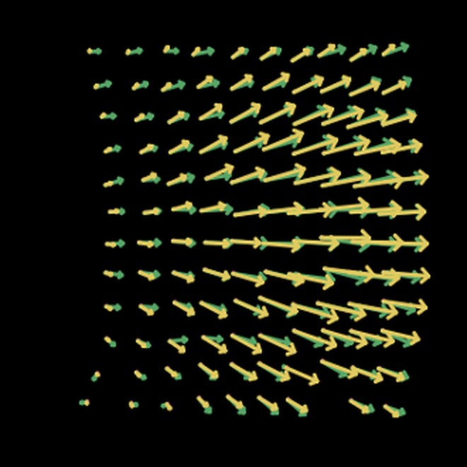
Markers: yellow sim, green real
… and after 100 iterations?
Gradients: the lid opens
PPO baseline: lid stays shut
Unlocked
Touch you can simulate and differentiate: a contact-rich skill is tuned by gradients in 100 iterations.
Still open
Only fingertips on a fixed arm. What about a robot that must move its whole body to reach?
Clips: DiffTactile project page (2 s clips at half speed) · marker plot: paper Fig. 3 · numbers: Tables 2 and 5 of the paper (Table 5: simulation, best row per method) · the diagram is a schematic
StartRootsMoveHandsSystem 0SeeSystem 1
10
RA-L 2025
Legs + arm
RoboDuet: two policies, one body
One policy for the legs, one for the arm: together they track a 6D end-effector pose with the whole body.
Real Unitree Go1 + ARX5 arm: the trunk pitches down to reach the ground (2×)
and while it walks?
Same robot on a glossy lobby floor: walking while the arm switches target poses
Before · one or the other
“Whole-body reach, or a full 6D pose?”
Deep WBC: position onlyGAMMA · GeFF: arm and legs separate
RoboDuet · both at once
“How must the legs lean to place the hand?”
6D end-effector posethe arm guides the trunkwhile walking
RoboDuet: Learning a Cooperative Policy for Whole-body Legged Loco-Manipulation. IEEE RA-L 10(5), 2025 · clips: project page, supplementary video
StartRootsMoveHandsSystem 0SeeSystem 1
11
How it works
The arm tells the legs how to lean
1 · Legs alone10,000 iterations
2 · Both together40,000 iterations
Base velocitywalk + turn speed
Loco policyMLP · 50 Hz
PD + robotGo1 + ARX5, 18 joints
Arm policyMLP · 50 Hz
6D hand poseend-effector target
12 joints
6 joints
state
state
guidance: body pitch + roll
PPO
PPO
Two commands, two policies. A base velocity drives the loco policy: 12 leg joints. A 6D end-effector pose drives the arm policy: 6 arm joints. Both run at 50 Hz, and PD controllers track their joint targets.
The arm policy has two extra outputs. A body pitch and a body roll: the guidance. They replace the loco policy’s own orientation command, so the arm can ask the legs to tilt the trunk.
Leaning enlarges the workspace. Targets on the floor or above the robot come within reach. In simulation 67.21 % of sampled poses are reached without a collision; a fixed-posture base with an IK arm reaches 52.38 %.
Legs first, then the duet. Stage 1 trains only the loco policy, arm frozen: a stable gait. Stage 2 trains both, sharing one end-effector tracking reward. Without stage 1, survival under 10–20 N pushes while standing falls from 98.2 % to 94.5 %.
Photo composite, real robot: walking right to left; each axis triad is one 6D target
does the trunk follow the arm?
The trunk pitches with the arm
how far down can it reach?
Down to the floor, in front of its legs
Clips: RoboDuet project page (locomanip-duet.github.io), real robot · numbers: Fig. 4 and Table III of the paper, simulation · composite: animated Fig. 1
StartRootsMoveHandsSystem 0SeeSystem 1
12
Under the hood
RoboDuet: Two PPO policies coupled by a pitch-and-roll guidance, trained in two stages
Velocity command$v_x,\ v_y,\ \omega_{\text{yaw}}$ + trot clock of 4 sines
Arm policy $\pi_{\text{arm}}$MLP 512‑256‑128, ELU out: 6 joints + 2 guidance
Loco policy $\pi_{\text{loco}}$MLP 512‑256‑128, ELU out: 12 leg joints
PD + Isaac GymGo1 + ARX5 · 18 joint position targets · 50 Hz
Gait + velocity rewardtrot, 3 Hz steps, 0.06 m swing, energy penalty
PPOasymmetric actor-critic: the critic sees privileged simulation info
Pose reward $r_\chi$end-effector error vs target, paid to both policies
Operator, VR handlesright hand: velocity left hand: end‑effector pose
Both policies, frozen50 Hz, as in training
Real Go1 + ARX5, then Go2 + ARX5 zero-shotthe Go2 platform is 14.7 % heavier: 21.05 kg vs 18.35 kg
targets
state
targets
state
guidance: pitch, roll
state
reward
update
pose
reward
update
targets
policylearned networkfrozen / not learneddata · signalloss · rewardsimulator · robotactiontraining signal
The control loop: velocity and pose in, 18 PD targets outStage 1: the legs learn to walk alone, with the arm frozenStage 2: the arm joins, and one pose reward pays both policiesDeployment: the same two policies on a real Go1, then a Go2What it costs, and what makes it work
Objective
Velocity: $r_{v} = \exp\{-|v_{x,y} - v^{\text{cmd}}_{x,y}|^{2} / \sigma_{v}\}$, weight $1.0$ in stage 1, $0.5$ in stage 2
Energy: $r^{\text{loco}}_{\text{energy}} = -0.00004 \sum_{i \in \text{legs}} |\tau_{i}\, \dot q_{i}|^{2}$, against motor overheating under the arm
Pose: $r_{\chi} = e^{-w\,\Delta(l,p,y)} \cdot e^{-\Delta(\alpha,\beta,\gamma)}$, $\ \Delta(\cdot) = \sum_{u} k_{u}\,|u_{t} - u^{\text{cmd}}|$, for both policies
Guidance: $r^{\text{arm}}_{\text{guide}} = -10\,|\phi_{t} - a^{\text{armG}}_{t}|$ ties the trunk’s pitch and roll $\phi_{t}$ to the guidance
Training recipe
Stage 1, 10,000 iterations: train the loco policy alone; arm fixed at its default pose
Stage 2, 40,000 iterations: add the arm policy; guidance replaces the pitch + roll command
At the switch: footswing reward −10 → 0, hip constraint 0 → −0.05, velocity rewards halved
Deploy both policies at 50 Hz; a person sends velocity and end-effector pose by VR handles
4,096parallel robots in Isaac Gym
50,000PPO iterations: 10,000 + 40,000
18joint targets at 50 Hz: 12 leg + 6 arm
3 seedsper method in the ablation
The detail that makes it work
Two guidance outputs of the arm policy replace the legs’ pitch and roll command. Workspace in simulation, standing still: 0.86 m³; one policy with two heads: 0.60 m³.
Versus its predecessor
vs Deep Whole-Body Control: two policies and a 6D pose instead of one policy and position only. vs Walk These Ways: its gait reward is the stage-1 prior.
StartRootsMoveHandsSystem 0SeeSystem 1
13
Results
What the duet buys on real robots
Doll from a 60 cm cabinet up to a 100 cm desk (2×)
Floor to desk, four heights
A doll goes from the ground to a chair, a cabinet and a standing desk, then back. The trunk tilts down to the floor, up to the desk.
… and targets outside the training range?
Targets high above the robot: the trunk rolls and pitches
Extreme poses, few collisions
Five target poses, four of them extreme, eight tries each. Self-collision in 5 % of trials; 50 % with a fixed-posture base and IK.
… on a robot it was never trained on?
Go1 (left), Go2 (right): same policies, same targets
Another dog, no retraining
The policies trained on a Go1 run unchanged on a Go2 that is 14.7 % heavier. A VR device sends both the same target poses.
39 / 60
RoboDuetreal transfers, 4 × 15 trials
32 / 60
Built-in controllersAFB+ID, of Go1 and ARX5
10 / 60
Fixed-posture base + IKFB+IK · 0 / 30 at the desk
Unlocked
Legs and arm act as one body: velocity and 6D hand pose in; the legs lean and step to reach it.
Still open
Only the low-level controller: blind, and a person supplies every target. What does the layer above need?
Clips: RoboDuet project page and supplementary video, real robots · numbers: Tables V and VI and Sec. V-B of the paper · 0 / 30: our sum of two columns of Table VI
StartRootsMoveHandsSystem 0SeeSystem 1
14
Technical report 2024
A simulated society
GRUtopia: a city to test the layer above
A simulated city where a language agent has to act through learned legged controllers.
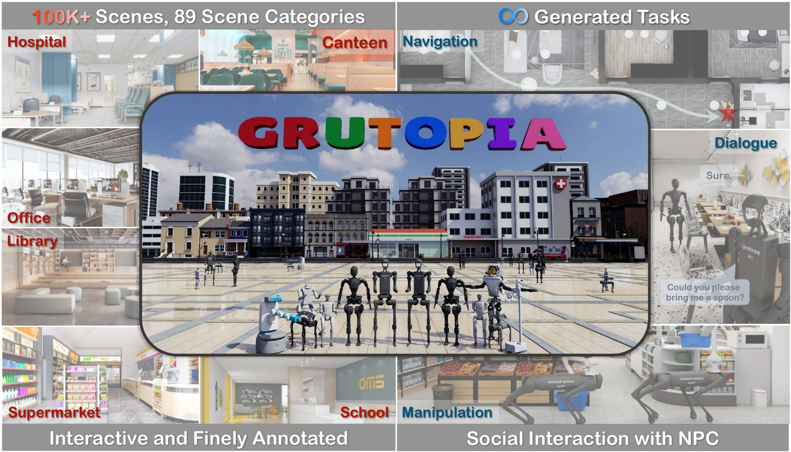
Paper teaser · simulation renders: 100k scenes, a city, NPC residents
Simulation · a learned walking controller in the loop (Unitree G1, docs demo, 2025)
how did agents move before?
Before · most embodied-AI platforms
“Where should the agent go?”
motion by animationposition set directly
and with a body in the loop?
GRUtopia · learned controllers as APIs
“Can a walking robot get there?”
RL walking policiesfalls counted as resets89 scene categories
GRUtopia: Dream General Robots in a City at Scale. Technical report, arXiv:2407.10943, 2024 · teaser: paper Fig. 1 · clip: platform docs
StartRootsMoveHandsSystem 0SeeSystem 1
15
How it works
A slow agent on top of a fast controller
GRBenchtask + instruction
GRScenes100k scenes
GRResidentsLLM-driven NPCs
AgentLLM or VLM · 1 Hz
Path plannerRRT* · way-points
Walking policyRL · 60 Hz
Isaac Simphysics · 240 Hz
velocity
joint targets
joint state
goal
one RGB-D frame per second
dialogue
The fast loop. A walking policy trained with RL takes a velocity command and sets joint targets 60 times a second, on physics stepped at 240 Hz.
The slow loop. An agent built on an off-the-shelf LLM or VLM gets one rendered RGB-D frame per second and names a goal; an RRT* planner turns the goal into velocity commands.
A world with residents. GRScenes: about 100k scenes in 89 categories. GRResidents: NPCs driven by an LLM that reads the simulator’s ground truth. GRBench: three task families, 300 episodes each.
Two levels, one narrow interface. Language and pixels above, once a second; balance below, 60 times a second; between them a velocity command. It is the first two-level stack in this talk.
Schematic: one second of the loop, drawn to scale
what does the agent see?
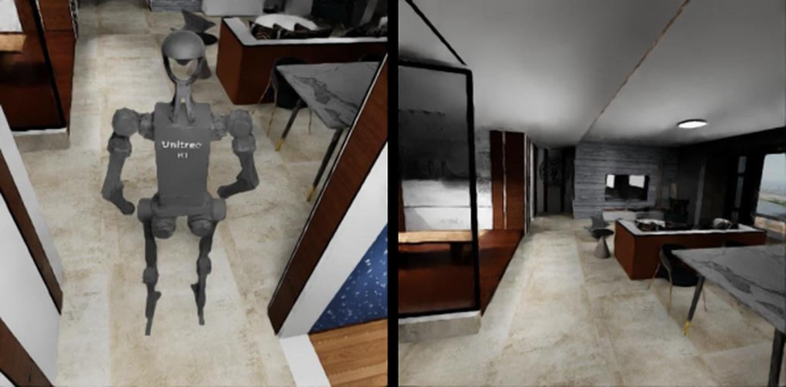
Paper fig. 7 · simulation: the H1, and its camera view
and whom can it ask?
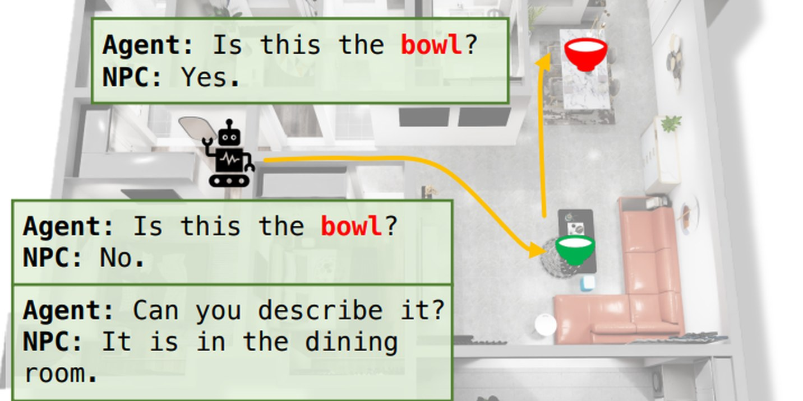
Paper fig. 5 · the agent asks an NPC which bowl is meant
Figures: GRUtopia paper, Figs. 5 and 7 (simulation) · rates: App. C.3 · velocity command: current repository · diagram and timeline are schematics
Flat ground. Walk from point to point: the H1 and the Aliengo + Z1 both reach every goal.
… and between furniture?
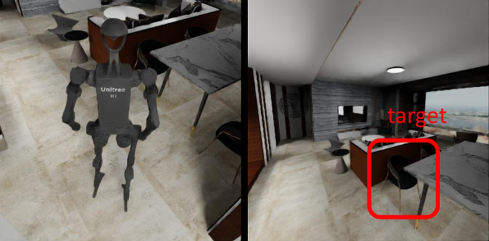
Paper fig. 7 · simulation: the H1 in a furnished home
58 % · 14 %
Furnished house, same controllers: H1 58 %, Aliengo + Z1 14 %. The paper blames mostly path and motion planning.
… and with a task for the arm?
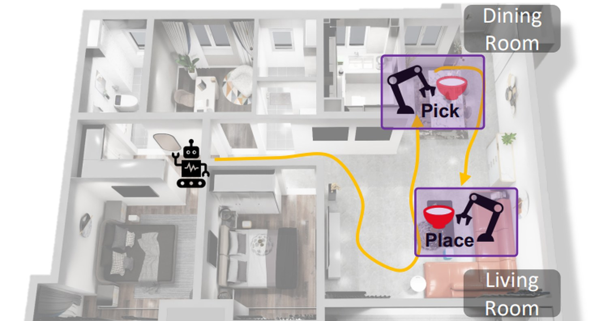
Paper fig. 5 · loco-manipulation: pick here, place there
0 %
Loco-manipulation in GRBench: no agent, with any LLM or VLM, completes a single episode.
Unlocked
The two-level split becomes measurable: a language agent has to act through a learned legged controller.
Still open
Under the agent is only a walker: 100 % on flat ground, 58 % in a furnished house. The legs come first.
Clip: platform docs (G1 demo of 2025, an illustration) · figures: paper Figs. 5 and 7 · numbers: Tables 3 and 4 of the paper (H1, Aliengo + Z1; simulation)
StartRootsMoveHandsSystem 0SeeSystem 1
17
Chapter 2 · 2025
Move
Can a humanoid’s legs go anywhere, and get back up?
HoST RSS 2025 · Outstanding Systems Paper finalist
BeamDojo RSS 2025
VB-Com ICRA 2026
Gallant CVPR 2026 · Highlight
18
RSS 2025 · Outstanding Systems Paper finalist
HoST: stand up from almost anywhere
Real Unitree G1 · proprioception only No motion data, single-stage RL
19
How it works
Four reward groups, four critics, a helping hand
Smoothness lossL2C2 · actor + critics
PPOadds 4 advantages
4 criticsone per reward group
4 reward groupsone weight per group
Pulling force200 N → 0 N
No commandno goal, no reference
Policy50 Hz · 23 joints
Action bound βlimits each joint step
PD controller500 Hz on the robot
Unitree G1Isaac Gym in training
action
target
torque
IMU + joint encoders · the last 5 states
state, reward
update
lifts the base
No command, no camera. The policy reads the IMU and joint encoders and moves 23 joints at 50 Hz. One behaviour: stand up, then stay standing. Trained with PPO in Isaac Gym, on four terrains.
One critic per reward group. Task, style, regularisation and post-task rewards each get a value network; PPO adds the four normalised advantages. With a single critic, success is 0.0 on all four terrains.
A helping hand that fades. Once the trunk is upright, 200 N pull the base up. Each time the head reaches its target height, the force drops by 20 N, down to 0. Without it: 0.0 success on ground, wall and slope.
Then calm it down for hardware. The action bound β shrinks from 1 to 0.25, and a smoothness loss keeps the outputs for neighbouring states close. Without the bound, the smoothness error on flat ground is 9.52, not 2.90.
Simulation: ground, platform, wall, slope
who scores the attempt?
Schematic: when each group pays
a fallen robot: how does it explore?
Schematic: force and bound curricula
… and on real hardware?
Real G1 · up from the lab floor
Clips: HoST code repository (simulation) · project page, archived copy (real robot) · numbers: Table III, Appendix B · both figures are schematics; steps 10 and 38 are our arithmetic
StartRootsMoveHandsSystem 0SeeSystem 1
20
Results
Twenty real trials, twenty stand-ups
Real G1 · the lab scene for the platform terrain
Four lab scenes, five trials each
An ottoman, a sofa back and a ramp stand in for platform, wall and slope. All 20 trials end standing.
… outdoors?
Real G1 · stone platform, tree, gravel path, lawn
Outdoors, on ground it never saw
Grass, a stone road, a wooden boardwalk: none of these terrains was in the training simulation.
… while it is being kicked?
Real G1 · kicked while it is getting up
Kicked mid-rise, it still gets up
It does not go back to the floor. With a backpack: 3 of 3 trials at 10 kg, 2 of 3 at 12 kg.
20 of 20
real G1, 4 lab scenes5 of 5 in every scene
11 of 20
no smoothness losssame scenes · slope 0 of 5
≥ 94.2 %
simulation, 4 terrainssingle critic: 0.0 on all four
Unlocked
A humanoid no longer has to start on its feet: 20 of 20 real trials, with no motion data.
Still open
Blind, and it does one thing. On hard ground, where should the next step land?
Learning Humanoid Standing-up Control across Diverse Postures. RSS 2025 · clips: project page (archived copy) · numbers: Tables III, IV, V
StartRootsMoveHandsSystem 0SeeSystem 1
21
RSS 2025
Sparse footholds
BeamDojo: aim every footstep
A humanoid learns to put a flat foot on stepping stones and a 20 cm beam, reading an onboard LiDAR elevation map.
Real Unitree G1 · stepping stones, a platform, then beams, in one run
… and on a beam 20 cm wide?
Balancing beam, 20 cm wide: one foot in front of the other
Before · quadrupeds on sparse footholds
“Is the foot, a point, on a stone?”
feet modelled as pointsone misstep ends the episode
BeamDojo · a flat humanoid sole
“How much of the sole is on the stone?”
points sampled under each solea misstep first costs only a penalty
Practise on flat ground, pay for imagined missteps
PPOadds 2 advantages
2 criticsone per reward group
18 walking rewardsdense, every step
Foothold rewardsparse, per sole point
Velocity commandforward / backward
Policy50 Hz · 12 leg joints
PD controller500 Hz
Unitree G1Isaac Gym in training
Elevation map15 × 15 grid · 10 Hz
speed
targets
torque
LiDAR
height map + proprioception
update
A walker that reads a height map. A speed command, proprioception and a 15 × 15 grid of ground heights go in; targets for the 12 leg joints come out at 50 Hz. On the robot, a LiDAR builds the grid at 10 Hz.
A reward for a flat foot. A quadruped’s foot is a point; a humanoid’s sole is an area. So sample points under each sole: every point that hangs over a hole costs a penalty, and more overlap with the stone pays more.
Two critics, one per kind of reward. One learns the 18 dense walking rewards, the other only the sparse foothold penalty; PPO adds their normalised advantages. With one critic, success on hard stones is 55.67 %, not 91.67 %.
Practise on flat ground first. Stage 1: the feet touch flat ground while the map shows the stones, so a misstep costs a penalty and the episode goes on. Stage 2: real stones, where a misstep ends it. Without stage 1: 42.00 %.
Simulation · red dots = height-map samples
what is a good footstep?
Schematic: points under one sole
a sparse reward: who learns it?
Schematic, after Fig. 7: foot paths
one misstep ends the episode?
Schematic: stage 1 and stage 2
Clip: BeamDojo project page (simulation) · numbers: Table II of the paper, hard stepping stones in simulation · 18 rewards = our count of Table VII · the three figures are schematics
StartRootsMoveHandsSystem 0SeeSystem 1
23
Results
Zero-shot onto stones and a 20 cm beam
Real G1 · stepping stones, 20 cm in size
No fine-tuning on the robot
Stones up to 45 cm apart. In training, the height map gets four kinds of noise.
… on terrain it never trained on?
Real G1 · a 50 cm gap, not a training terrain
Terrains it never trained on
Gaps: 5 of 5 on the real robot. Stepping beams: 3 of 5. Neither was a training terrain.
… walking backward?
Real G1 · the same stones, walking backward
Backward over the same stones
The LiDAR map also covers the ground behind. One depth camera cannot handle this.
4 of 5
stepping stones, real G1without map noise: 1 of 5
4 of 5
20 cm beam, real G1without map noise: 0 of 5
91.67 %
simulation, hard stonesPIM baseline: 46.67 %
Unlocked
A flat foot lands on stepping stones and a 20 cm beam, straight from an onboard LiDAR elevation map.
Still open
It can only step where the map says; map drift still limits it. What happens when the map is wrong?
Clips: BeamDojo project page (why618188.github.io/beamdojo) · numbers: Fig. 8 (real robot, 5 trials per terrain) and Table II of the paper
StartRootsMoveHandsSystem 0SeeSystem 1
24
ICRA 2026
Unreliable perception
VB-Com: when the eyes fail, fall back on reflexes
A vision policy and a blind policy run side by side; the robot switches to the blind one when perception fails.
Real Unitree G1, head lidar working: it steps over both hurdles
two hurdles again, with the head sensor covered?
Real G1, head sensor covered: it walks into both hurdles and recovers
Before · a vision policy alone
“Where does the map say I can step?”
needs a correct height mapneeds static terrain
and what does VB-Com ask?
VB-Com · adds a second question
“Is this still going well?”
answered from proprioception alonea blind policy runs alongside
VB-Com: Learning Vision-Blind Composite Humanoid Locomotion Against Deficient Perception. ICRA 2026 · clips: project page
StartRootsMoveHandsSystem 0SeeSystem 1
25
How it works
Two policies, and an estimate of which does better
Height mapfrom the head lidar
Proprioceptionjoints, base, command
Vision policy $\pi_v$map + proprioception
Blind policy $\pi_b$proprioception only
Return estimatorsone per policy
Switcha rule, not a network
Unitree G1 · H1runs one action
action $a_v$
action $a_b$
joint and base state, every control step
history
estimated returns $\hat G_v,\ \hat G_b$
action $a$
Two policies, trained the same way. Same rewards, same action space, PPO in simulation. The vision policy reads a height map from the head lidar; the blind policy reads proprioception only.
Each policy gets a return estimator. A small network predicts how much reward its policy will collect over the next switch period. Its only input is a history of proprioception.
A fixed rule picks one action. The vision action runs while its estimate is above the blind one, and the blind estimate has not fallen below its 5-step mean minus a margin. Otherwise the blind action runs.
A wrong map cannot fool the switch. The estimators never see the map. A collision or a missed step shows up in proprioception: both estimates drop within several control steps, and the blind policy takes over.
The drop detector carries the result. Without the threshold on the blind estimate, goals completed fall from 85.76 % to 48.48 % in simulation. The switch stays a rule with hand-set parameters.
Real G1: around a standing person
how does a policy know it is doing well?
Schematic after the paper’s Fig. 5: two return estimates
and when the map is wrong?
Real H1: a missed step (0.5×)
does the threshold matter?
85.76 %with the threshold
48.48 %without it
goals completed · simulation
Ablation of the switch threshold
Clips: VB-Com project page (renjunli99.github.io/vbcom.github.io) · switch rule: Eqs. 7, 8 · numbers: Table IV, simulation · the curve figure is a schematic
StartRootsMoveHandsSystem 0SeeSystem 1
26
Results
Corrupt the map, and success barely moves
Real Unitree G1: a person runs into its path
Hit, switch, walk around
The map misses a person who runs in. The G1 is hit, switches to the blind policy and gets around him.
and a hurdle that appears in mid-stride?
Real Unitree H1: two beams dropped in its path
Hurdles that appear too late
Beams fall into the H1's path as it walks. It collides, recovers on the blind policy, then does it again.
how often does it reach the goal?
Simulation · goals completed vs perception noise
Noise barely moves it
Goals completed stay at 82–85 % from 0 to 100 % noise. The vision policy alone falls from 73.57 % to 48.71 %.
The robot no longer has to trust its eyes: a blind reflex policy plus a learned “is this going well?” signal.
Still open
Two policies, a hand-set switch, a map that cannot show what is overhead. Can one policy see the full 3D space?
Clips: VB-Com project page (renjunli99.github.io/vbcom.github.io), real robots · numbers: Table II of the paper, simulation, hardest terrain level
StartRootsMoveHandsSystem 0SeeSystem 1
27
CVPR 2026 · Highlight
Gallant: one voxel grid for floor, walls and ceiling
One policy · a real Unitree G1 The whole course, one take
28
The idea
A height map has no ceiling
A 2.5D map keeps one height per ground cell. A voxel grid keeps the whole space around the robot.
Real Unitree G1: around two panels, then under a hanging one
what does the policy get to see of this scene?
What the policy gets in a door-and-ceiling scene: 5 cm voxels
Before · height map (2.5D)
“How high is the ground in this cell?”
one number per ground cellreal low ceiling: 0 of 15real door: 1 of 15
Gallant · voxel grid
“Is this 5 cm cell of space occupied?”
32 × 32 × 40 cells around the torsoreal low ceiling: 15 of 15real door: 15 of 15
Gallant: Voxel Grid-based Humanoid Locomotion and Local-navigation across 3D Constrained Terrains. CVPR 2026 · clips: project page · numbers: Fig. 6
StartRootsMoveHandsSystem 0SeeSystem 1
29
How it works
Height slices as channels, one policy end to end
LiDAR simulationscans its own links
Goal positionrelative to the robot
PPOgoal-reaching reward
Two torso LiDARsfront + back · 10 Hz
Voxel grid32 × 32 × 40 · 5 cm
2D CNNheight = channel axis
Policyone MLP actor · 50 Hz
PD + Unitree G129 joint targets
points
10 Hz
64-d
25 Hz
50 Hz
proprioception
in training
update
Two LiDARs, one grid. Two Hesai JT128 on the torso, front and back, cover ∼4.00π of solid angle; elevation-map methods see ∼1.97π. Ten times a second, their points become a binary grid of 5 cm cells.
Height becomes the channel axis. Most columns hold one or two occupied cells, so a plain 2D CNN reads the 40 height slices as 40 channels. A training iteration takes 5.5 s; with a 3D CNN, 10.3 s.
A goal point in, 29 joint targets out. The command is a position relative to the robot, not a velocity. One policy does local navigation and locomotion, at 50 Hz, on the onboard NVIDIA Orin NX.
One stage of PPO, all in simulation. Eight terrain families with a curriculum; the reward pays for reaching the goal within 10 s. The simulated LiDAR also returns the robot's own moving links.
Randomize the LiDAR, or it fails on hardware. Pose, hit points, 100–200 ms of latency, 2 % of voxels masked. Without it, real successes in 15 trials fall: platform 14 → 4, stairs up 15 → 6.
Voxel grid while climbing stairs
how does a network read 3D cheaply?
Schematic: height slices as channels
and what is the command?
Schematic: the command is a point
where is it trained, and does it transfer?
Isaac Sim training terrain: crouching under ceiling slabs
Real robot: successes in 15 trials per terrain
Clips: project page (gallantloco.github.io) · numbers: Table 1, Fig. 5d, Sec. 3.2 and Fig. 6 of the paper · the two middle figures are schematics
StartRootsMoveHandsSystem 0SeeSystem 1
30
How it trains
Simulate the sensor, not only the terrain
Scene meshesterrain + robot links
LiDAR ray-castwith NVIDIA Warp
Randomizationpose, hits, lag, mask
Two real LiDARsHesai JT128 · 10 Hz
OctoMaponboard · Orin NX
Voxel grid32 × 32 × 40 · 10 Hz
Policyone policy · 50 Hz
points
on the robot
10 Hz
meshes
points
in training
All the policy sees of the world is this grid. On the robot, two LiDARs and OctoMap build it ten times a second. In training, a simulator has to build the same grid, with the same flaws.
Cast rays at everything, the robot included. Each mesh, terrain or robot link, keeps a precomputed BVH in its own frame; the rays are moved into that frame, so nothing is rebuilt. One NVIDIA Warp kernel covers all environments.
Leave the body out, and success collapses. Simulation only, hardest setting: low ceiling 97.1 → 28.4 %, platform 96.1 → 22.16 %, stairs up 96.2 → 33.0 %. Standing upright it hardly matters: door 98.7 → 98.3 %.
Then make the scan late and noisy. LiDAR pose: 1 cm and 1° of noise per episode. Every hit point: 1 cm. Each scan arrives 100–200 ms late, and 2 % of the voxels are masked.
Leave that out, and the robot reacts too late. Real robot only, successes in 15 trials: platform 14 → 4, stairs up 15 → 6, stairs down 14 → 8, stepping stones 12 → 9. Under the low ceiling nothing changes: 15 → 15.
Voxel grid: a platform and a gap
what does a real LiDAR also hit?
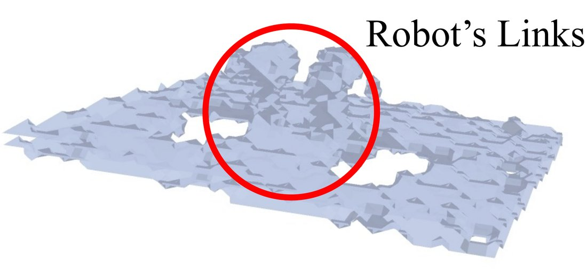
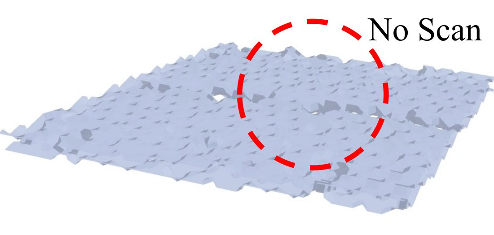
Paper Fig. 5 · with self-scan, without
and if the body is left out?
Simulation only · Table 3a, redrawn
what else is different about a real scan?
Schematic: the four LiDAR randomizations
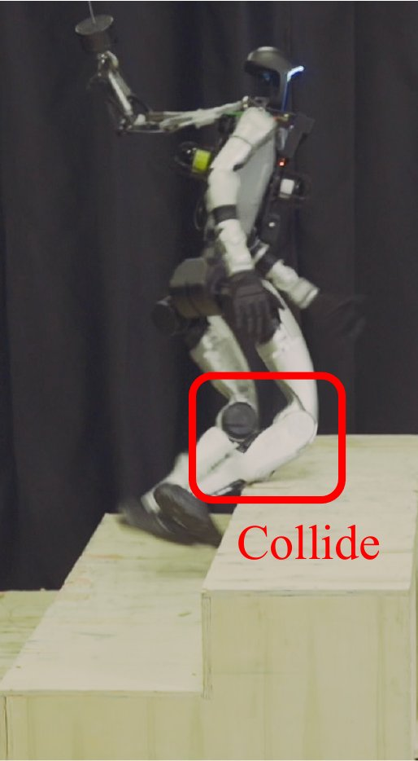
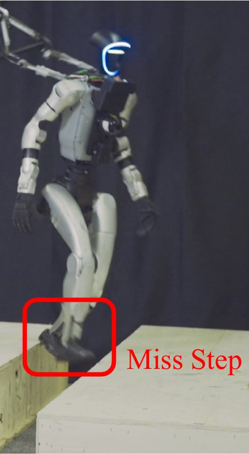
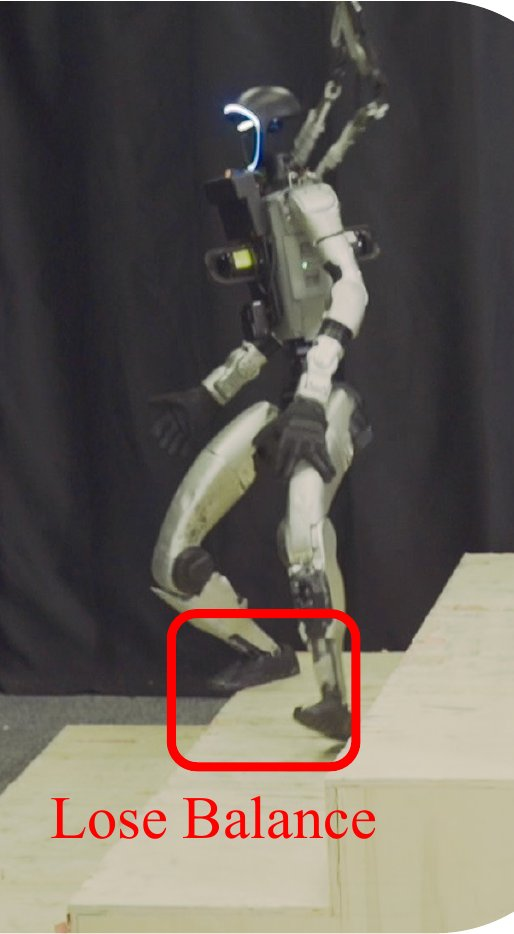
Real robot, no LiDAR randomization · paper Fig. 9
Clip: project page · stills: Fig. 5 and Fig. 9 of the paper · numbers: Sec. 3.2, Table 3a (simulation only), Fig. 6 (real robot only) · the chart is redrawn, the icon figure is a schematic
StartRootsMoveHandsSystem 0SeeSystem 1
31
Under the hood
Gallant: Simulated LiDAR with self-scan, a z-as-channel CNN, one-stage PPO
LiDAR ray-cast (Warp)2 × JT128: terrain and the robot's own moving links
LiDAR randomizationpose, hits: $\sigma$ = 1 cm, 1° lag 100–200 ms · 2 % masked
Goal + proprioceptiongoal $P_t$, time elapsed / left history: 6 states, 4 actions
Terrain curriculum8 families · difficulty $s$ 8 m blocks · 10 s episodes
64-d
PD targets
proprioception
points
noise
GAE($\lambda$)
value loss
update
terrain
zero-shot
policylearned networkfrozen / not learneddata · signalloss · rewardsimulator · robotactiontraining signal
The control loop: voxel grid and goal in, 29 joint targets outThe simulated LiDAR sees the robot's own body, late and noisyOne-stage PPO; only the critic sees velocity and the height mapA terrain curriculum in training, then zero-shot on the robotWhat it costs, and why the self-scan matters
Objective
2D conv over $x$–$y$: $Y_{o} = \sigma\big(\sum_{c=0}^{C-1} W_{o,c} * X_{c} + b_{o}\big)$, $\ C = 40$ height slices as input channels
LiDAR: $P^{\text{rand}} = P + \mathcal{N}(0, 1)$ cm for pose and hit points, rays $+\ \mathcal{N}(0, (\pi/180)^{2})$ rad
The simulated LiDAR also scans the robot's own links. Without that, simulated success falls from 97.1 % to 28.4 % under the ceiling and from 96.1 % to 22.16 % on platforms.
Versus its predecessor
vs BeamDojo, VB-Com: a voxel grid replaces the elevation map (field of view ∼4.00π vs ∼1.97π). vs HOMIE: the same reward family, with goal reaching in place of velocity tracking.
StartRootsMoveHandsSystem 0SeeSystem 1
32
Low ceiling · 15 of 15
Door · 15 of 15
and over obstacles on the ground?
Stairs · up 15, down 14 of 15 · here right to left
Left to right · 15 cm steps left, 20 cm right
and with a gap to cross?
Platform with a gap · 14 of 15 · here the narrowest gap
The same 30 cm platform · the widest of the three gaps
Gallant · real robot
Under and around. A low ceiling and a door: 15 of 15 each, straight from simulation.
Stairs, both ways. Up one flight and down the other: 15 of 15 up, 14 of 15 down.
A 30 cm platform with a gap. 14 of 15. The project page shows gaps of 30, 35 and 40 cm.
Seven terrains, fifteen trials each, one policy
15 of 15Flat floor
15 of 15Low ceiling
15 of 15Door
14 of 15Platform + gap
12 of 15Stepping stones
15 of 15Stairs up
14 of 15Stairs down
100 of 105our sum of Fig. 6
StartRootsMoveHandsSystem 0SeeSystem 1
33
Stepping stones (0.5×) · 12 of 15 · height map 10
12 of 15on the real robotthe lowest of seven terrains
82.1 %in simulationhardest setting · Table 3
> 90 %zero LiDAR latencyin simulation · no table printed
Stepping stones: real robot and simulation
and a height-map policy, on the same robot?
Real robot: successes in 15 trials per terrain
Gallant · results
The weak spot. Stepping stones, 12 of 15: every LiDAR scan is over 100 ms old.
What a height map cannot show. Low ceiling 0 of 15, door 1 of 15; with the voxel grid, 15 of 15 each.
One policy: over, around and under
Unlocked
One onboard policy for the full 3D space: it walks over, around and under obstacles, zero-shot from simulation.
Still open
It only walks to a goal point: no hands, no task. Who drives the upper body?
StartRootsMoveHandsSystem 0SeeSystem 1
34
Chapter 3 · 2025 – 2026
Hands
Who drives the upper body, and where do demonstrations come from?
HOMIE RSS 2025
FORGE arXiv 2026
TAG arXiv 2026
OPFA ICRA 2026
35
RSS 2025
HOMIE: a $500 cockpit for a whole humanoid
One seated operator · a real Unitree G1 Legs by pedal, arms by exoskeleton
36
How it works
Pedals drive learned legs, an exoskeleton sets the arms
Exoskeleton + gloveson the operator’s arms
Foot pedalunder the operator’s feet
Joint angles $q_{\text{upper}}$2 × 7 arm joints + fingers
Command $C_t$speed · turn · torso height
Policy $\pi_{\text{loco}}$RL · 50 Hz on the robot
PD + Unitree G1real robot · Dex3-1 hands
leg targets
copied joint for joint · nothing learned
state of every joint, arms included
One operator, two channels. A seated person wears two exoskeleton arms with gloves and rests both feet on a pedal board. The robot is split the same way: its arms follow the hands, its legs follow the feet.
The feet give three numbers. Forward speed, turning speed and torso height. A policy trained by reinforcement learning turns them into leg joint targets at 50 Hz, on the robot: it walks, and it squats.
The arms are not learned. The exoskeleton has the robot arm’s joint layout, so each robot joint copies one exoskeleton joint; gloves with Hall sensors set the fingers. No inverse kinematics, no pose estimation.
The legs watch the arms. The policy observes every joint of the robot, arms included, and it is trained while the arms move at random. That is how the legs stay balanced while the operator moves the arms freely.
It holds in the test. 1,000 simulated G1s, 20 s each, with fully random arm poses: on average they stay up 19.947 s of 20 s, with a mean torso-height error of 0.022 m.
Cockpit: exoskeleton, gloves, pedal
what do the feet say?
Real G1: squats while the arms move
and the arms?
Real G1: arms and fingers in motion
moving arms shift the balance: who tells the legs?
Isaac Gym: G1s train with random arm poses
HOMIE: Humanoid Loco-Manipulation with Isomorphic Exoskeleton Cockpit. RSS 2025 · clips: project page · numbers: Table II, App. C-A
StartRootsMoveHandsSystem 0SeeSystem 1
37
How it is built
No motion capture, no GPU, $500
CAD render: exoskeleton arms and gloves on a back plate
CAD render: three pedals, two mode buttons
Joint matchingno motion capture
1 : 1one sensor per joint
Command rateno GPU
263 Hzarms · hands 293 Hz
Costbill of materials
$500parts sum to $510
The linkWi-Fi to the robot
16 mslatency · 128-byte packets
Arms, gloves, a pedal board. The exoskeleton arms are 3D-printed, with one small servo in every joint; the gloves read the fingers; three pedals and two mode buttons sit under the feet. No camera has to track the operator.
No motion capture. The servo in each joint reads its angle, as an absolute encoder accurate to 0.09°. The exoskeleton has the robot arm’s joint layout, so that angle is the robot’s joint target: no pose estimation, no inverse kinematics.
No GPU. Copying angles costs almost nothing: the cockpit outputs 263 arm and 293 hand commands per second without a GPU. The vision-based interfaces in the paper’s Table IV reach 16 to 125 Hz for the arms, on a GPU or an M2 chip.
About $500 of parts.$430 for the exoskeleton, $30 per glove, $20 for the pedal. It is not the cheapest system in the paper’s Table I, but the only row that ticks loco-manipulation, whole-body control and no MoCap together.
What reaches the robot. A packet is 128 bytes; the measured Wi-Fi latency is 16 ms. On the G1 the arm targets are updated at 10 Hz and interpolated on the robot; the paper states that the cockpit could support over 200 Hz.
Clips: CAD renders from the HOMIE project page (homietele.github.io) · numbers: Tables I, III and IV, Sec. III-C, Sec. IV-C1 and App. C-A of the paper
StartRootsMoveHandsSystem 0SeeSystem 1
38
Under the hood
HOMIE: Leg policy trained under random arm poses, with a knee reward and mirrored data
Mirror left ↔ rightabout the x–z plane · both copies are stored
Deployment: cockpitexoskeleton sets the arm joints, the pedal sets $C_t$
PD targets
state: every joint
state
reward
update
value
arm joints
range
velocity tracking good: widen the range
replaces
pairs
policylearned networkfrozen / not learneddata · signalloss · rewardsimulator · robotactiontraining signal
The loop: three commands in, leg joint targets out, state backPPO on a 33-term reward (our count): track commands, bend kneesArm targets are random; their range grows with the legs’ skillEvery transition is stored twice: as it is, and mirroredWhat it costs, and what makes it work
PPO in Isaac Gym, 4,096 flat-ground environments; new commands every 4 s, one third squat
Randomize payloads (torso −5 to 10 kg, hands −0.1 to 0.3 kg), friction, gains; push every 4 s
Give the arms new random targets every 1 s; raise $\rho_a$ by 0.05 when velocity tracking is good
Store every transition and its mirror image; add the two symmetry losses to the PPO loss
≈ 3 hon one RTX 4090 (project page)
4,096parallel environments
0 hof motion capture
50 Hzon the G1’s Jetson Orin
The detail that makes it work
Mirrored data: without it the velocity error is still ≈ 0.6–0.7 m/s after 2,000 steps, with it ≈ 0.19 m/s. The arm curriculum keeps balance under moving arms.
Versus its predecessor
vs HumanPlus, OmniH2O, Mobile-TeleVision: no retargeted MoCap prior, and torso height is a command. vs upper-body-only teleoperation: the legs are in the loop.
StartRootsMoveHandsSystem 0SeeSystem 1
39
Squat to a low shelf, place the tape roll higher (2×)
Squat to the ground and pick up a bottle (2×)
and when the task needs walking?
Push a seated 60 kg person across a lobby
Carry a box from one shelf rack to the next (2×)
and with two hands, or two robots?
Two G1s, two operators: an apple changes robots
One G1: a tomato passes from hand to hand (2×)
HOMIE · real robot, teleoperated
From the floor to the shelf. The G1 squats for a tape roll on a low shelf, and for a bottle on the ground.
Walking is part of the task. A 36.4 kg G1 pushes a seated 60 kg person, and carries a box to the next rack.
Two hands, or two robots. A tomato changes hands; with two operators, an apple passes between two G1s.
One operator, the whole body
One seated operator per robot, linked by Wi-Fi: pedals for the legs, exoskeleton and gloves for arms and fingers.
One seated operator per robot, linked by Wi-Fi: pedals for the legs, exoskeleton and gloves for arms and fingers. Demonstrations, not a benchmark: one recorded run each; the paper reports no success rate or attempt count for them.
A person writes two things. Three pedal numbers $C_t$ and the upper-body joint targets $q_{\text{upper}}$. Everything below them, the learned legs and the PD loop, already runs on the robot.
Record what the robot sees and is told. Two tasks, 50 episodes each, at 10 Hz: three RGB views (head and both arms), the joint state, and both commands.
A policy takes the operator’s seat. Seer, an autoregressive transformer, reads the three views and the joint state; three heads output arm joints, hand joints and the height command. The legs are untouched.
It succeeds in most trials. 15 per task on the real G1: Squat Pick 73.3 %, Pick & Place 80.0 %. There is no baseline, and the policy runs off the robot: 10 Hz on an RTX 4080 host, over a cable.
The same cockpit drives simulated robots. The leg policies of the G1 and the Fourier GR-1 also run in Isaac Sim scenes from GRUtopia. Teleoperation only: no success rate, and no simulated data in training.
Cockpit: the G1 copies the operator, toy from hand to hand
and without the operator?
Autonomous: Squat Pick
how often does it work?
Autonomous: Pick & Place
and in simulation?
Simulation: a G1 in a GRUtopia scene
Clips: HOMIE project page · numbers: Sec. IV-D, Table V, Sec. IV-C3, App. C-B and C-C of the paper · the diagram is a schematic
StartRootsMoveHandsSystem 0SeeSystem 1
41
Results
Faster than VR, quick to learn, and reused
Open Oven: one of the four timed desk tasks
Nearly half the time of VR
Four desk tasks against the VR system OpenTelevision: nearly half the time, says the paper; 1.25× to 2.05× faster per task.
and for someone who has never tried?
Hand Over: the task of the user study
Five novices, five tries
People who had never teleoperated a humanoid, after a brief tutorial: on average 24.8 s on the first try, 8.0 s on the fifth.
and after the paper?
Schematic: three later uses of the leg controller
What later works did with it
Learned policies write its commands where a person did; SONIC measures itself against it; NVIDIA’s repository holds a second version.
up to 2×
faster than VRvs OpenTelevision · 4 tasks
8.0 s
novices, fifth try24.8 s on the first · mean of 5 people
Feb 2025
code public sinceRL training + G1 deployment
Unlocked
One person drives a whole humanoid: walking, squatting, both hands at once. Every minute can be training data.
Still open
The body is split in two, and it feels no force. Can legs and arms answer to one controller that feels contact?
Clips: HOMIE project page · numbers: Sec. IV-C1, Fig. 11 (read off the bars), Table X · later works: their papers and the OpenHomie README · the figure is a schematic
StartRootsMoveHandsSystem 0SeeSystem 1
42
arXiv 2026
Force-aware whole-body control
FORGE: one policy for legs and arms that feels force
It takes velocity, foothold, wrist-pose and force commands, and estimates wrist force with no force sensor.
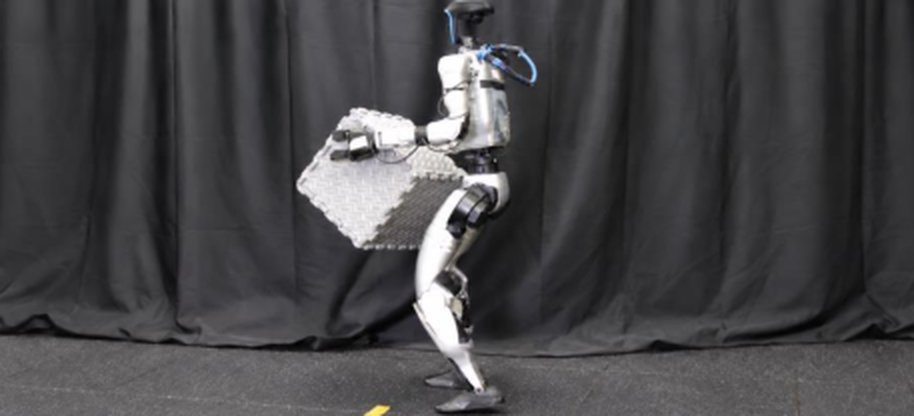
Walk and carry · a foam cubePaper figure · real robot
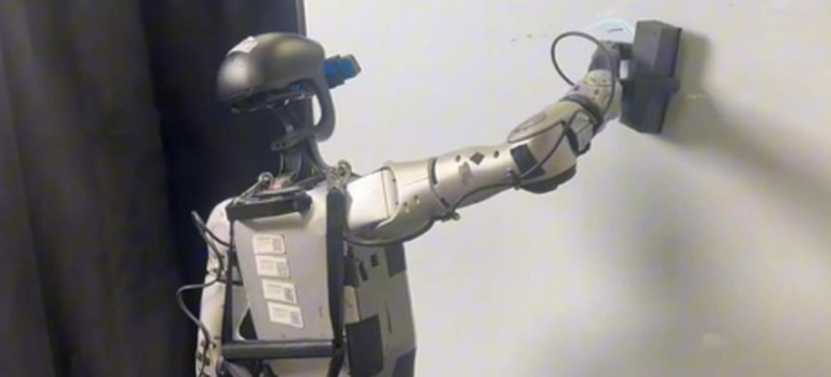
Reach a target · wiping a whiteboardPaper figure · real robot
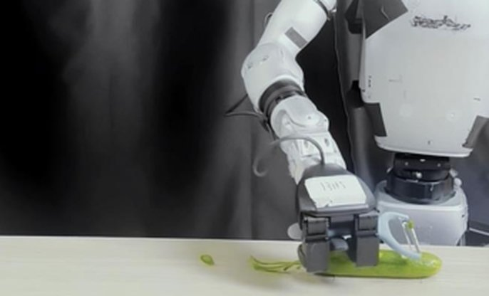
Hold a contact · peeling a cucumberPaper figure · real robot
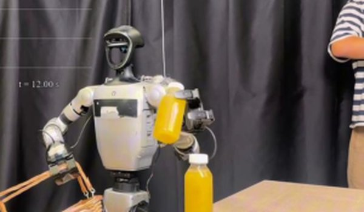
Sense a load · bottles into a basketPaper figure · real robot
Four command groupsbase velocity footholds wrist poses wrist force (optional)
G1 humanoid29 joints no wrist force sensor
Frozen leg experttrained first, to walk
Residual policylegs, waist and arms
Momentum observerarm model, not learned
Learned correctionfrom simulated contact
one whole-body policy
unused groups masked
29 joint targets · 50 Hz
wrist-force estimate
arm joint states
shifts the wrist target
Four kinds of command. A base velocity, footholds for both feet, a pose for each wrist and, optionally, a force each wrist should apply. Any subset can be active, and no human motion data is used in training.
One policy, on a frozen leg expert. A walking policy is trained first and frozen. The new policy adds small corrections for the legs and all of the arm motion. Command groups that are switched off are masked out.
Force, without a force sensor. A model-based momentum observer on the arm joints, plus a learned correction, estimates the force at each wrist. The force error then shifts the wrist target (gain Kf = 200 N/m).
FORGE: Force-Aware Multi-Granularity Control for Efficient Humanoid Loco-Manipulation. arXiv:2611.17142, 2026 · stills: Fig. 1 of the paper
StartRootsMoveHandsSystem 0SeeSystem 1
43
Results
A gentler grip, with no force sensor
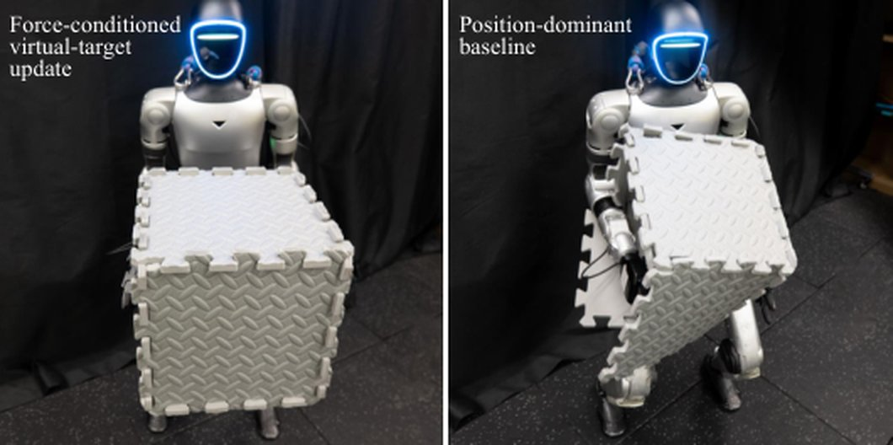
Paper figure · real robot: force loop on (left), off (right)
The force loop softens the grip
Same policy, same lift, and both succeed. With the loop on, the foam cube is visibly less deformed. A photo: no number is given.
and how good is the estimate?
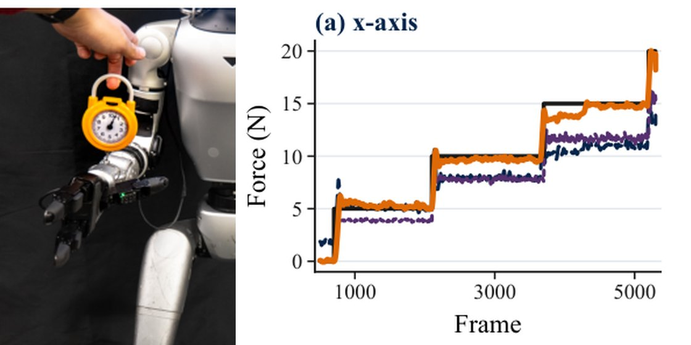
Paper figures · real robot: orange = estimate, black = gauge
The estimate, against a gauge
A handheld gauge loads the wrist up to 20 N. RMSE on x / y / z: 0.81 / 1.97 / 0.87 N; the observer alone: 2.83 / 5.15 / 3.02 N.
and when a policy writes the commands?
Schematic: one dot per trial, real robot (Table V)
A policy can write the commands
A Diffusion Policy runs a squat-and-lift on the real robot: 20, 20, 18 and 18 of 20, from an empty box to 2 kg. No baseline is reported.
8.52 N
squeezing forcesimulation · rigid box test
15.48 N
HOMIEthe same simulated test
15.32 N
SONICsame test · TWIST2: 17.16 N
Unlocked
One controller for legs and arms: it estimates the force at each wrist without a force sensor.
Still open
The robot now senses the force; the operator still feels nothing. Can the person feel it too?
Stills: Fig. 8a, 9a and 9b of the paper · numbers: Tables I, IV and V · Table IV covers the traces of Fig. 8, not all trials · the dot figure is a schematic
StartRootsMoveHandsSystem 0SeeSystem 1
44
arXiv 2026
Tactile teleoperation
TAG: let the operator feel what the robot feels
A glove that tracks 21 finger joint angles and raises the robot’s fingertip contact on the operator’s skin.
Tracking only: an XHand on a stand mirrors every finger of the gloved hand
and when the fingers touch something?
Pinching a 1.75 mm filament: fingertip sensor maps (top), bumps on the glove (inset)
The problem: the operator sees the robot hand but feels nothing. Did the finger touch? How hard is it pressing? Only the eyes can tell.
TAG returns the touch: 32 bumps on every fingertip show where the robot is touched and how hard. 21 joints are tracked to under 1°, and the open-source glove costs under $500.
Feel Robot Feels: Tactile Feedback Array Glove for Dexterous Manipulation. arXiv:2603.28542, 2026 (in submission) · clips: project page
StartRootsMoveHandsSystem 0SeeSystem 1
45
How it works
A magnet at every joint, 32 bumps per fingertip
Operator’s handin the TAG glove
21 joint encodersmagnet + 3-axis sensor
Hand retargetingfingertip poses → joints
Robot handtactile sensors on its fingertips
Tactile mappingshape mode · pressure mode
32-bump arrayon every fingertip · 2 cm²
motion
21 angles · 260 Hz
joint commands
tactile map
32 × up / down
touch
A magnet at every joint. Each of the glove’s 21 joints carries a ring magnet over a 3-axis magnetometer. The angle is the atan2 of two field components: a ratio, so common-mode errors such as temperature cancel.
Touch comes back to the fingertip. The robot’s fingertip tactile map switches 32 bumps on the operator’s fingertip: electro-osmotic pumps, where 200 V across a membrane moves liquid and raises a 1.6 mm-wide dot.
Shape mode keeps the outline. The tactile image is resampled onto the 32 bumps, so a point, two points, a line or a patch on the robot’s fingertip appears as the same pattern on the operator’s.
Pressure mode turns force into area. The peak pressure raises 1, 7 or 19 bumps as it crosses set thresholds: a harder press is felt as a larger patch.
Tracked fingers at work: a Pocky stick lifted into a cup
Inset, top left: the pad raises 7 bumps at each press
what shape is the contact?
Shape mode: point, two points, line, plane (2×)
and how hard is it pressing?
Schematic: 1, 7 or 19 of the 32 bumps light up
Clips: TAG project page · numbers: Sec. III-C, III-D and Appendix A–C of the paper · the bump figure is a schematic with a simplified layout
StartRootsMoveHandsSystem 0SeeSystem 1
46
Results
Force you can feel is force you can control
Lamp brightness: turn the knob, force kept within 0.5–3 N
A light touch, held
12 of 15 with the bumps on. The same glove, bumps off: 4 of 15. The HOMIE glove: 1 of 15.
… and without looking at all?
Blindfolded: 0.5, 3.5 and 7.5 N held on a spring button
Touch replaces sight
Three force levels, blindfolded: 13 of 15. Bumps off: 3 of 15. The HOMIE glove: 2 of 15.
… and the tracking on its own?
Lamp colour: press above 3 N while turning
Better fingers help on their own
Bumps off: 12 of 15, the HOMIE glove 9 of 15. Bumps on: 14 of 15 in 8.4 s; the HOMIE glove takes 23.5 s.
< 1°
joint-angle errorbench: within ±0.35° of a servo
0.24°
beside a running PCManus glove: 5.69°, same test
< $500
open-source glovecommercial: over $5,000
Unlocked
Touch on the operator’s fingertip: sub-degree finger tracking and the robot’s contact, in a glove under $500.
Still open
Every robot hand needs its own demonstrations. Can one policy use them all?
Clips: TAG project page (UR5e + XHand) · numbers: Tables II and IV, Sec. III-A and IV-A of the paper · 15 trials per cell · baseline glove: HOMIE
StartRootsMoveHandsSystem 0SeeSystem 1
47
ICRA 2026
Cross-embodiment manipulation
OPFA: one action space for every hand
Describe a hand by its shape, not its joint list: grippers and five-finger hands then share one action latent.
Real UR5e arm · one checkpoint, four end-effectors: grasp the pot and pour
and a task that needs one finger at a time?
Syringe: an XHand and a Leap Hand press the plunger with the thumb
Before: every hand has its own joint list, so co-training gave each hand its own decoder, trained on that hand’s demonstrations alone. Nothing is shared at the fingers.
From any hand’s joints to one shared action
Hand posejoint angles of one hand
Point cloudits shape, from kinematics
Encodertrained on sampled poses
Action latentwhat the policy predicts
One shared decoderjoints of the mounted hand
One-Policy-Fits-All: Geometry-Aware Action Latents for Cross-Embodiment Manipulation. ICRA 2026 · arXiv:2603.14522 · clips: project page
StartRootsMoveHandsSystem 0SeeSystem 1
48
Results
A skill shown on one hand transfers to another
Real UR5e · block into the drawer, on four end-effectors
Four end-effectors, one checkpoint
24 demonstrations per hand and task. Drawer, two-finger gripper: 100 %; with a decoder per hand, 80 %.
… where only the other hand has data?
Schematic: the test of Table I (simulation tasks)
A skill crosses between hands
Inspire Hand, banana: 98.0 %. XHand, bucket: 94.0 %, against 33.0 % with a decoder per hand, 1.0 % alone.
… and across many hands and tasks?
Real UR5e · 15 rollouts: tissue, mango, basket, broom
11 end-effectors, 14 tasks
4 on the real arm, 7 more in simulation. Not uniformly better: with 8 demos each, the UMI gripper gets 27.0 %; alone, 43.0 %.
98.0 %
one shared decoderInspire Hand · banana pick
83.0 %
a decoder per handsame co-training, same test
10.0 %
no co-trainingits own 72 demos only
Unlocked
One action latent for grippers and dexterous hands: a skill shown on one hand transfers to another.
Still open
The legs still know three pedal numbers, and a person writes every command. Three ways out.
Clips: OPFA project page (real robot) · numbers: Tables I, II and Fig. 5 of the paper · the region figure is a schematic
StartRootsMoveHandsSystem 0SeeSystem 1
49
The fork
Three roads out of the cockpit
Chapters 2 and 3 leave two problems open. The next three chapters answer them in three ways.
Still openEach skill has its own policy and reward
HOMIE · operator and G1
Still openA person writes every command
One controller for all motion
Chapter 4 · System 0
Can one controller execute any whole-body motion, whoever writes the command?
SONIC · a real G1, running
Give the policy eyes
Chapter 5 · See
Can a policy write the commands from the robot’s own camera?
VIRAL · real G1, RGB in (4×)
Let a model write the commands
Chapter 6 · System 1
One model for every task, on the robot’s own computer?
GR00T 2 Turbo · popcorn
2025The humanoid has one policy per skill and a person in the cockpit. Where does it go from here?
Road ATrain one whole-body controller to follow whatever human motion it is given.
Road BTrain a policy in simulation that writes the commands from the robot’s own camera.
Road CPut one model above the controller: first a VLA, then a world-action model on the robot.
SpoilerThe roads meet in one stack: a world-action model writes tokens for SONIC, and simulation multiplies its data.
StartRootsMoveHandsSystem 0SeeSystem 1
50
Chapter 4 · 2025 – 2026
System 0
Can one controller execute any whole-body motion, whoever writes the command?
Decoupled WBC GR00T-WholeBodyControl 2025
SONIC Science Robotics 2026
51
Released Nov 2025
Open source · NVlabs/GR00T-WholeBodyControl
Decoupled WBC: HOMIE’s legs, second version
HOMIE’s split, a learned policy for the legs and no learning for the arms, as the controller used in GR00T N1.5 and N1.6.
HOMIE, 2025 · real G1, teleoperated from the cockpit: squat, grasp the bottle, stand (2×)
and with a VLA in the operator’s seat?
GR00T N1.6 demo, 2025 · real G1 walks up, squats, takes the bag (blog clip at 2×)
OpenHomie (HOMIE’s repository) · README, News
“there is a homie v2 rl policy at https://github.com/NVlabs/GR00T-WholeBodyControl/tree/main/decoupled_wbc”
NVlabs/GR00T-WholeBodyControl · README
“Decoupled WBC: the decoupled controller (RL for lower body, and IK for upper body) used in NVIDIA GR00T N1.5 and N1.6 models”
Released files · the Balance and Walk networks have the graph of OpenHomie’s deploy.onnx, only wider: 516 inputs → 15 outputs instead of 456 → 12 (our file check)
NVlabs/GR00T-WholeBodyControl, decoupled_wbc/ · News: “[2025-11-12] Initial release with Decoupled WBC for GR00T N1.5 and N1.6.” · clips: HOMIE page, GR00T N1.6 blog
StartRootsMoveHandsSystem 0SeeSystem 1
52
How it works
Seven commands for the legs, IK for the arms
VLA · GR00T N1.630-step action chunks
Upper-body targetsarm · hand · waist joints
7 commandsvelocity ×3 · height · torso ×3
Lower-body policyRL · Balance + Walk · 50 Hz
PD + Unitree G1three-finger hands
legs + waist
arms + hands · not learned · IK in teleoperation
torso orientation
state of all 29 body joints
4 of 7
Two halves, as in HOMIE. A learned policy moves legs and waist from seven numbers, at 50 Hz: three velocities, base height, torso roll, pitch and yaw. Arm and hand targets pass straight through; in teleoperation, IK makes them.
What the second version adds. Read from the released files: HOMIE’s network graph, with three more commands (torso roll, pitch, yaw), three more joints (the waist), and two networks instead of one, Balance and Walk.
A VLA takes the operator’s seat. GR00T N1.6 predicts 30 steps at a time: arm, hand and waist targets, plus a base-height and a navigation command. That is four of the seven numbers; the torso’s three follow from the waist targets.
Other writers, same seven. VIRAL and DoorMan train camera policies on a HOMIE controller that “takes 7 commands” (their repositories). GR00T N1.7 keeps a tag “compatible with the decoupled WBC controller”; its end-to-end workflow is SONIC only.
The limit, measured. In the SONIC paper, HOMIE’s public controller (“OpenHomie”) stays up in 43.0 % of runs (86 of 200) under velocity commands of 0–5 m/s, in simulation (MuJoCo); SONIC stays up in 98.5 %.
GR00T N1.6 demo: real G1 walks up
what did version two add?
Released policy files · our reading
and who writes the commands?
N1.6 demo: sets a mug in the rack
who else writes these seven numbers?
Real G1: VIRAL (left), DoorMan · RGB in, commands out
Unlocked
Legs a VLA can drive with seven numbers: the controller used in GR00T N1.5 and N1.6.
Still open
Two halves, a velocity command: version one survives 43.0 % of SONIC’s test. What if one policy tracked any human motion?
Clips: GR00T N1.6 blog; VIRAL and DoorMan pages · interface: decoupled_wbc code, Isaac-GR00T configs · 43.0 % vs 98.5 %: SONIC paper, Fig. 2I · table, “4 of 7”: our reading of the released files
StartRootsMoveHandsSystem 0SeeSystem 1
53
Science Robotics 2026 · arXiv Nov 2025
SONIC: one controller for any human motion
One policy · a real Unitree G1 Motion tracking, scaled up
54
The bet
Scale three axes, keep the task simple
Real G1 · the task itself: copy a person, frame by frame
S0one trackerfor any motion
Commandtokensnext slide
Data≈ 700 hoursof mocap
Datamotion capture
100M+frames · 611 h at 50 Hz
Modelnetwork size
42Mparameters · up from 1.2M
ComputeGPUs in parallel
128 GPUs7 days ≈ 21k GPU hours
Unseen motionsabsent from training
99.6 %success · 98.0 % at 1.2M
One task, no reward per skill. The robot only has to follow a reference motion, frame by frame, so every frame of motion capture is a training target. The bet: leave the task alone, and scale the data, the model and the compute around it.
Data. About 700 hours of human motion capture are retargeted to the G1. Motions the robot cannot execute, such as stair climbing and seated activities, are filtered out: 611 hours remain, 100M+ frames at 50 Hz in 317,189 clips.
Model. Three sizes are trained: 1.2M, 16M and 42M parameters. Every real-robot experiment uses the 42M model; on the G1’s onboard Jetson Orin one forward pass takes 1–2 ms.
Compute. 16, 32 and 128 GPUs, each run to 50k iterations with 4,096 simulated robots per GPU: about 2k, 9k and 21k GPU hours. The largest run is 128 GPUs for 7 days.
Tracking keeps improving with scale, most on motion types that never appear in training: there, success in simulation rises from 98.0 % with the 1.2M model to 99.6 % with the 42M model, and the tracking error falls from 27.7 to 23.8 mm.
What should the body do next? A reference motion says it: the next 10 frames, 0.1 s apart.
An encoder squeezes them into 2 × 32 numbers, each rounded to one of 32 levels. These 64 numbers are the whole command.
Real G1 · tracking a boxing motion
One decoder moves the body
The control decoder reads the token and the robot’s own sensing over the last 10 steps: joint positions and velocities, rotation rate, gravity direction, previous action.
Out come 29 joint targets, 50 times a second. Balance is its job, not the writer’s.
Real G1 · one foot on the pedal while the arms reach
Real G1 · crawling on hands and knees
Three formats, one token
The same motion can arrive in two more formats: a person’s 3D joints, or only head and two hands on top of the robot’s leg motion.
Each format has its own encoder. All three write the same 64 numbers.
Trained to agree
PPO on a tracking reward trains encoders and decoder together, in one stage.
Three more losses tie the encoders: one motion must give one token in every format, and decode back to the robot motion. Without them the tokens sit about 8× further apart.
$\mathcal{L} =$
$\mathcal{L}_{\text{ppo}}$follow the reference
+
$\mathcal{L}_{\text{recon}}$any token decodes to the robot motion
+
$\mathcal{L}_{\text{token}}$three formats, one token
+
$\mathcal{L}_{\text{cycle}}$human → robot → the same token
Clips: SONIC project page · token and format figures: schematics, illustrative values · numbers: Fig. S7 and Table 3C of the paper
StartRootsMoveHandsSystem 0SeeSystem 1
56
The interface
One token, many writers
Universal token2 × 32 = 64 numbers per control step · all the controller is told about the motion
control decoderUnitree G129 joint targets, 50 times a second. The same controller under every writer.
Gamepad + planner$\mathcal{E}_r$
A gamepad
A kinematic planner turns speed, heading and style into the next 0.8–2.4 s of robot motion, and replans up to 10 times a second.
Gamepad + planner: boxing
VR teleoperation$\mathcal{E}_h$ , $\mathcal{E}_m$
A person in VR
Headset, controllers and ankle trackers give the operator’s whole body. Or only head and wrists: the planner adds the legs.
a person, live?
Whole-body VR · operator at the back
Video · text · music$\mathcal{E}_h$
A camera, a prompt, a song
GEM, a human-motion model, estimates motion from a camera or generates it from text or music. The human encoder reads it directly.
no hardware on the person?
Camera → GEM: person and robot crawl
GR00T N1.5 VLAno encoder
A vision-language-action model
It writes the token itself in 4 of 5 real tasks: 75 % average success over all 5. With body poses instead, on 3 of them: 27 % against 68 %.
no person at all?
VLA: drill to bin, bin to shelf (2×)
Whoever can write 64 numbers can drive the whole body. The controller underneath is never retrained.
Clips: SONIC project page (nvlabs.github.io/GEAR-SONIC) · planner: Sec. 2.2 of the paper · VLA success rates: Table 1
StartRootsMoveHandsSystem 0SeeSystem 1
57
The interface · planner
The planner writes motion; the tracker keeps balance
Gamepadmode, speed, direction
Kinematic plannerposes only, no physics
Robot motionthe next 0.8–2.4 s
SONIC controllertoken → 29 joint targets
PD + Unitree G1control at 50 Hz
4 frames of its own plan
proprioception
Gamepad + planner: a stealth walk
A second, generative model
It turns mode, speed and direction into whole-body robot motion. It learned from the same motion capture as the tracker.
what does it compute?
Schematic: one plan fills in the gap
It fills in the gap
From 4 recent frames of its own plan to a target pose 0.8–2.4 s ahead. The planner picks the length.
who keeps the balance?
Gamepad + planner: an elbow crawl
No physics inside
It continues from its own plan, not from the robot’s sensors. Keeping the body on that plan, and upright, is the tracker’s job.
fast enough to steer?
Gamepad + planner: squat, kneel, stand up
Fast enough to steer
It replans up to 10 times a second, or at once on a new command. One plan: ≈ 12 ms on the Jetson Orin, under 5 ms on a laptop.
25+ skills and styles from one planner, each defined by a single example clip. Nothing is retrained to add one.
Clips: SONIC project page (nvlabs.github.io/GEAR-SONIC) · planner: Sec. 2.2, 3.3, 3.6 and Supp. S1.2 of the paper · the timeline is a schematic
StartRootsMoveHandsSystem 0SeeSystem 1
58
The interface · teleoperation
Drive it from VR, record the demonstrations
Universal tokenthe same 64 numbers, however the operator is tracked
The operator’s pose is the command: 87 numbers per frame, body and hands. The human encoder reads the motion; no retargeting at run time.
Headset · controllersplanner + $\mathcal{E}_m$
3-point mode
Only head and both wrists are tracked; the operator steers the walk. The planner writes the legs, and the hybrid encoder reads both.
without the ankle trackers?
3-point VR · one hand carries, one presses the lift button
and data to teach a model?
Both modes write the same token, so demonstrations from either can share one action space for a VLA to learn.
Clips: SONIC project page (nvlabs.github.io/GEAR-SONIC) · modes: Sec. 2.4 and Supp. S1.4 of the paper · counts: Table 1A and Sec. 2.5
StartRootsMoveHandsSystem 0SeeSystem 1
59
The interface · VLA
A VLA writes the tokens, feet included
Paper · GR00T N1.5, fine-tuned · real Unitree G1
VLA: one foot presses the pedal, the lid opens
It writes the token itself
Fine-tuned on the teleoperated demonstrations. In 4 of the 5 tasks its action is the 64-number token plus 14 hand joints: no encoder, the whole body, feet included.
The hardest task chains five skills, from grasping a can to pressing the pedal and dropping it in.
how often does it succeed?
and outside the paper?
Isaac-GR00T example · N1.7 + SONIC: a towel pickup
Open source · GR00T N1.7 + SONIC
Repo docs · workflow defaults
The VLA runs at 2.5 Hz and sends 40 tokens per call; SONIC plays them at 50 Hz.
Isaac-GR00T example · real G1
159 of 216 table pickups (73.6 %) and 8 of 12 soda cans to the bin. Objects seen in training; retries count.
The VLA decides what to do; SONIC handles how: balance, walking and whole-body coordination.
Clips: SONIC project page · Isaac-GR00T example · numbers: Table 1 of the paper · rates, callout: GR00T-WholeBodyControl docs · 159 / 216, 8 / 12: Isaac-GR00T example README
StartRootsMoveHandsSystem 0SeeSystem 1
60
Under the hood
SONIC: Three encoders, one 64-number FSQ token, one decoder for 29 joints
policylearned networkfrozen / not learneddata · signalloss · rewardsimulator · robotactiontraining signal
Tracking loop: motion → token → joint targets, state backPPO on a dense tracking reward trains the whole pathThree losses through a motion decoder tie the encodersOn the robot: write a motion, or write the tokenThe cost, and the choice of quantizer
Retarget ≈ 700 h of mocap to the G1; drop stairs and sitting: 611 h remain
Sample 1 s bins by capped failure rate; randomize physics, pushes, targets
Encode each motion in three formats; optimize all four losses in one stage
Deploy the 42M model on the G1’s Jetson Orin (TensorRT); no retraining per writer
611 h100M+ frames · 317,189 clips
128 GPUs7 days ≈ 21k GPU hours
4,096environments per GPU
1–2 msper forward pass, onboard Jetson Orin
The detail that makes it work
FSQ only rounds numbers: no learned codebook that can collapse, no commitment loss, and straight-through gradients that train together with PPO.
Versus its predecessor
vs HOMIE’s controller (RL legs on a velocity command, arms set directly): one policy for all 29 joints, commanded by a token. One stage, no teacher.
StartRootsMoveHandsSystem 0SeeSystem 1
61
Results
The generalist outlasts the specialist
Real G1 · a motion generated from a text prompt
Motions it never trained on
99.6 % of 7,016 clips from motion types absent in training are tracked in simulation; 98.0 % with the 1.2M model.
… and on the real robot?
Real G1 · a swinging load hits it, and it keeps standing
The same policy on hardware
123 of 124 motions succeed on the real G1, one trial each; all 124 in simulation. Error: 25.7 mm real, 22.3 mm simulated.
… against a controller built for one job?
Real G1 · running on a gamepad command
Against a specialist
Velocity commands of 0–5 m/s in simulation: 98.5 % of 200 runs stay up, against 43.0 % for OpenHomie, HOMIE’s controller.
98.5 %
SONICunseen motions · MuJoCo test
82.0 %
BeyondMimicsame MuJoCo test · LaFAN data
61.6 %
Any2Tracksame MuJoCo test · LaFAN data
Unlocked
One controller for almost any human motion on the real robot, and a 64-number token anything upstream can write.
Still open
The controller is blind, and someone must write the commands. Can a policy do it from the robot’s own camera?
Clips: SONIC project page (nvlabs.github.io/GEAR-SONIC) · numbers: Sec. 2.1 and Fig. 2 of the paper · the tracker comparison is not data-matched
StartRootsMoveHandsSystem 0SeeSystem 1
62
Chapter 5 · 2025 – 2026
See
Can a policy write the commands from the robot’s own camera, trained only in simulation?
VIRAL CVPR 2026
DoorMan CVPR 2026
GRAIL CoRL 2026 · Oral
63
CVPR 2026
VIRAL: from pixels to loco-manipulation
One RGB camera · a real Unitree G1 (4×) Trained only in simulation
64
How it works
Command the controller, do not replace it
Teacherfull state · PPO
Staged reward5 stages · 36 terms
200 sim demosteleoperated
RGB studentsees pixels · 50 Hz
Commandvelocity · arms · hand
HOMIE controllerchapter 3 · frozen
PD + simulatorIsaac Lab · PD 200 Hz
Real Unitree G1no fine-tuning
PD targets
11 increments
reward
resets
the same
imitate
one RGB image + proprioception
match
zero-shot
Keep the controller from chapter 3. HOMIE’s policy, frozen, turns a command (walking velocity, height, arm joints; here also fingers) into joint targets at 50 Hz. In chapter 3 a person wrote that command.
A teacher writes the command. PPO on the full simulator state; its output is 11 increments, accumulated into the command. Every episode starts from a snapshot drawn from 200 teleoperated simulation demos.
A student that sees pixels imitates it. One 108 × 192 RGB image plus proprioception in. Half the environments follow the teacher, half the student (DAgger); light, materials and camera pose are randomized.
Match the hand and the camera. The high-gear-ratio fingers are system-identified from a real grasp-and-release recording; the camera view is aligned to real images. Then the student runs on the real G1, zero-shot.
HOMIE: a person writes the command
and who writes the command now?
Schematic: one ingredient removed
and without the simulator’s state?
Sim, time lapse · inset = the input
will it survive the real robot?
Finger SysID, before | after: simulated over real hand
VIRAL: Visual Sim-to-Real at Scale for Humanoid Loco-Manipulation. CVPR 2026 · clips: project pages · bars: Sec. 4.1; ≈ 0 % read off Fig. 9 · 36 terms: our count
StartRootsMoveHandsSystem 0SeeSystem 1
65
How it trains
Scale is part of the recipe
Sim · the teacher policy: every robot is one environment
Teacher: 16 GPUs, no rendering
PPO on the full simulator state in 32,768 parallel environments: two nodes of eight L40S GPUs, 2,048 on each GPU.
and with fewer GPUs?
Traced from Fig. 14 · teacher success, simulation
Too few GPUs, no teacher
With 1–2 GPUs the teacher plateaus far below; 8–16 GPUs take it above 90 % success. More compute is not only faster.
and when every step has to be rendered?
Sim · the rendered camera view; inset = augmented
Student: 64 GPUs, all rendered
One 108 × 192 image per environment and step, 1,024 environments per GPU. Rendering typically costs 10× or more in throughput.
1 GPU reaches 85 %read off the same plot · noisier
86–88 %
every run after 50 h1 to 64 GPUs · read off Fig. 15
Not only faster. For the teacher, large-scale simulation is “not only beneficial but often necessary” (the paper). The student ends about as high on 1 GPU; 64 GPUs get there in under half the time.
One command for the hand. The G1’s high-gear-ratio fingers move differently in simulation. So the policy sends one open / close command, and finger armature, stiffness and damping are fitted to a real grasp-and-release.
Align the camera, then jitter it. Intrinsics follow the manufacturer’s specification; extrinsics are found by matching a rendered image to a real one. Training then shifts the camera by up to ± 2–5 cm and ± 0.05–0.1 rad.
Randomize what cannot be matched. Light, materials, image quality and camera delay vary during training. Trained with none of it, the student keeps 0.649 of its success in simulation; of the single items, camera pose matters most.
Let the student make its own mistakes. Half the environments act with the teacher’s action, half with the student’s. Teacher-only rollouts reach the lowest loss and a success rate of 0.00: loss is not success.
Real G1 · testing the finger primitive
and what the camera sees?
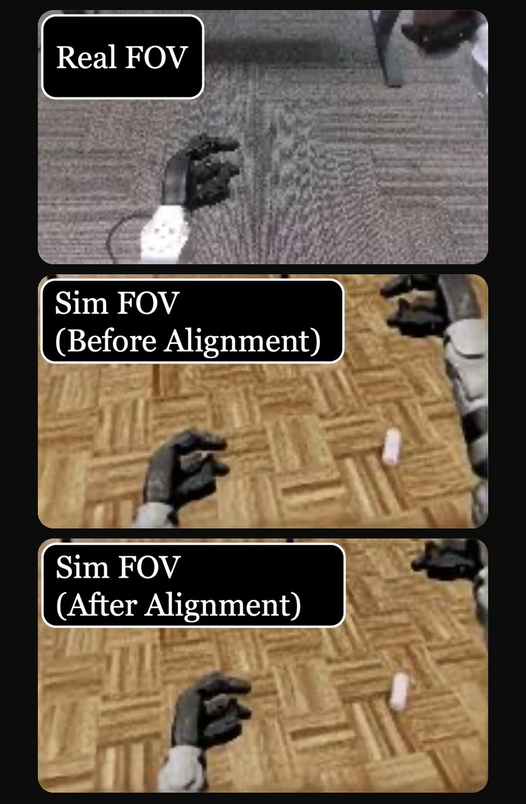
Paper figure (Fig. 6), panels stacked
and what cannot be matched?
Schematic after Fig. 13 · simulation
and the student’s own mistakes?
Schematic after Fig. 11 · loss: read-off
Clip: VIRAL project page (“Our Visual Sim2Real Journey”, 28 July 2025) · one hand command: page, Table 3, released code · numbers: Sec. 2.3, Table 7, Figs. 11 and 13 · loss read off Fig. 11
StartRootsMoveHandsSystem 0SeeSystem 1
67
Under the hood
VIRAL: A privileged teacher, an RGB student, and HOMIE’s frozen controller underneath
DAgger + BC lossMSE to the teacher’s action · $\alpha = 0.5$
Teacher $\pi_{\text{teacher}}$MLP 512-256-128 · 226-d privileged state
Real Unitree G1RealSense D435i RGB · no fine-tuning
Real-to-sim alignmentfinger SysID · camera intrinsics + extrinsics
200 sim demosteleoperated · state snapshots (RSI)
$a_t$ · 11-d
PD targets
RGB 108 × 192 + proprioception
increments $a_t$
update
$r_t$
privileged state
resets
labels
update
RGB
recordings
policylearned networkfrozen / not learneddata · signalloss · rewardsimulator · robotactiontraining signal
The control loop: a pixel policy writes HOMIE’s command at 50 HzPhase 1: a privileged teacher learns the task with PPOPhase 2: the RGB student imitates it under visual randomizationSim-to-real: match fingers and camera, then deploy zero-shotWhat it costs, and what makes it work
Objective
Action: $a_t = (\Delta v_t,\ \Delta\omega^{\text{yaw}}_t,\ \Delta q^{\text{arm}}_t,\ \Delta q^{\text{finger}}_t)$, 11 numbers, accumulated into the WBC command
Collect 200 teleoperated demos in simulation; reset every episode to a random snapshot
Train the teacher with PPO on 16 L40S GPUs, 32,768 environments, no rendering
Distill on 64 GPUs with tiled rendering; teacher and student each roll out half
Deploy with no fine-tuning: sim fingers and camera were matched to the real robot
200teleoperated simulation demos
16 GPUsteacher · 32,768 environments
64 GPUsstudent · tiled rendering
0real-world demonstrations or fine-tuning
The detail that makes it work
Demo resets and incremental commands. Without the resets the teacher stays below 10 % success (nearly 95 % with them); with absolute commands it fails.
Versus its predecessor
vs HOMIE (chapter 3): the same frozen controller and command, but a simulation-trained RGB policy writes the command instead of a person in a cockpit.
StartRootsMoveHandsSystem 0SeeSystem 1
68
Tray · 15 cm beyond the table edge
Robot start · “far” from the table (2×)
and when the table changes?
Table height · 80.7 cm, the highest of eight
Table cloth · red, one of eight colours
and a new object?
Object · a bowling pin, one of 13
and when it fails?
Failures · a fall | an apple it cannot lift
VIRAL · real robot
Positions. Tray from 20 cm inside the table to 15 cm beyond its edge; robot start near, middle or far.
The table. Eight heights from 66.5 to 80.7 cm, eight cloth colours, three table tops.
Objects and light. 13 everyday objects, here a bowling pin; bright, flashing and dark light.
And it fails, too. A fall, a stuck hand, a dropped object, three unfamiliar objects it cannot lift.
Change the scene, keep the policy
Videos, not statistics. Ten kinds of scene change, 55 clips on the project page (our count). The paper’s sentence for all of them: “VIRAL consistently completes the task without additional tuning.” No success rate is printed.
StartRootsMoveHandsSystem 0SeeSystem 1
69
Results
Zero-shot on the real robot, at an expert’s pace
Real G1 · time lapse of a 54-cycle run
54 of 59 trials succeed
Consecutive real-world trials of the whole loop, with no real-world training data. That is 92 %; an expert teleoperator reaches 100 %.
20.2 s
per cycle, VIRALzero-shot · 92 % success
21.4 s
expert teleoperatorover 1000 h experience · 100 %
47.0 s
non-expert teleoperatorabout 1 h experience · 73 %
Unlocked
A walk-place-grasp-turn loop from pixels: learned only in simulation, zero-shot on the real G1, at an expert’s pace.
Still open
One task, two tables, a hand-designed staged reward. Does it hold for articulated objects it has never seen?
Clip: VIRAL project page (viral-humanoid.github.io) · numbers: Sec. 3.1 and Fig. 7 of the paper (real robot)
StartRootsMoveHandsSystem 0SeeSystem 1
70
CVPR 2026
Articulated objects from RGB
DoorMan: open doors it has never seen
Randomize the door, its textures and the light in simulation, until a real door is just one more sample.
Real Unitree G1, autonomous (1×) · top right: the policy’s RGB input
and a door that opens towards the robot?
Real G1 · a pull door: press the lever, pull, step around, walk out
RGB only, no depthsimulation data onlyzero-shot on real doors
Opening the Sim-to-Real Door for Humanoid Pixel-to-Action Policy Transfer. CVPR 2026 · clips: project page
StartRootsMoveHandsSystem 0SeeSystem 1
71
How it works
Teacher, student, then learn from its own rollouts
PPOsix-stage reward
Teachersees simulator state
Reset buffer100 states per stage
GRPOsuccess or failure
StudentRGB + proprioception
HOMIE controllerpretrained, reused
G1 at a doorIsaac Lab → real robot
Door generatorshape, texture, light
update
commands
targets
scene
cache
load
labels
commands
its own rollouts
update
A teacher that sees everything. PPO on simulator state: door and handle poses, contact forces on the hands. A six-stage reward leads it from walk-up to walk-through; HOMIE’s pretrained controller handles the legs. 1 GPU, 6 hours.
Restart where it got stuck. Entering a new stage caches the simulator state, and a reset may load such a snapshot instead of the start. The reward is untouched; the teacher simply gets to practise the late stages.
A student with only a camera. DAgger: the student acts from RGB and proprioception; the teacher labels every state it reaches. Each environment has its own door; textures and 5,233 dome lights vary its look. 32 GPUs, 24 hours.
Then it learns from its own rollouts. GRPO, an actor-only PPO, fine-tunes the student on a reward that is mainly success or failure. It finds what the teacher never showed, such as keeping the object in view. 64 GPUs, 12 hours.
Teacher rollout, no textures
and if it never grasps the handle?
Schematic: resets reload cached states of later stages
the same task, from pixels?
Same rollout: materials and light vary
and what the teacher never showed?
Schematic: student success in GRPO
Clips: project page · numbers: Sec. 2.2, 2.4, 3.3 and 3.4 of arXiv 2512.01061 · compute (L40S GPUs): project page · both figures are schematics
StartRootsMoveHandsSystem 0SeeSystem 1
72
How it trains
Randomize the pixels, not only the door
Door generator5 types · 3 categories
Materialson every surface
Dome lights5,233 + Omniverse’s
RGB studentsees only the render
Schematic: ranges of Table 3
and how much do the pixels matter?
Table 1 · 120 unseen-door trials each · bars 2–4 with dome lights
Every environment gets its own door. Panels 0.8–1.1 m wide, 1.9–2.2 m tall, 80–120 kg; stiffness and damping of hinge and handle are drawn at random. The latch is modelled: the door gives way only once the handle is down.
Every surface gets a material. Trained on one grey look, the student opens 5–20 % of unseen doors. Solid colours under random dome lights, the classic recipe, reach 65.8–70 %; a tenth of the PBR textures 77.5–79.2 %; all of them 80.8–85.8 %.
The sky changes too. A dome light sets lighting and background: Omniverse’s own, plus 5,233 from Poly Haven, indoors and outdoors, at various times of day. Without them the full recipe drops to 73.3, 55.8 and 76.7 %.
No real scene is copied. The generator is not biased towards the size, physical response, texture, colour or light of any real location, and every real scene in the evaluation is unseen. To the student, a real door is one more sample.
Isaac Lab fly-over: one door per environment
and one rollout, in three looks?
Simulation: one rollout, the look keeps changing
Clips: project page; the lower one is its scroll animation at 30 fps (our choice) · numbers: Tables 1 and 3, Sec. 2.4, App. B of arXiv 2512.01061 · Table 1 as simulation: our reading
StartRootsMoveHandsSystem 0SeeSystem 1
73
Under the hood
DoorMan: A staged-reset teacher, an RGB student, then GRPO, all on HOMIE’s controller
DAggerteacher labels the states the student reaches
Teacher $\pi_T$sees door and handle poses, hand contact wrenches
PPOsix-stage reward · 33 terms (our count)
Reset bufferlast 100 snapshots of each stage
Door generatora door per environment · materials · dome lights
Command3 velocities · 14 arm joints · 2 hand values (released code)
HOMIE controllerpretrained, frozen · moves legs and waist
PD + Isaac LabUnitree G1 at a generated door
GRPOactor-only PPO: no value network
Group of $G$ rolloutsreturn $R_i$: mainly success or failure
$a_t$
PD targets
one RGB image + proprioception
commands
update
labels
update
RGB
its own rollouts
$\hat A_i$
update
cache
load
policylearned networkfrozen / not learneddata · signalloss · rewardsimulator · robotactiontraining signal
The control loop: one RGB image in, a command out, at 50 HzPhase 1: a privileged teacher, PPO, and resets from later stagesPhase 2: DAgger distills the teacher into the RGB studentPhase 3: GRPO fine-tunes the student on its own rolloutsWhat it costs, and what makes it work
Teacher reward: 33 terms by stage, e.g. stages 1–3: $-15.0\,\|u_{\text{HOMIE},[0:3]}\|_2$ (stand still)
Staged reset: $\tilde\rho_\alpha = \sum_{y} \alpha_y\,\rho_y$, $\ \sum_{y} \alpha_y = 1$: a share $\alpha_y$ of rollouts starts in stage $y$
GRPO: $\hat A_i = (R_i - \operatorname{mean}(R))/\operatorname{std}(R)$ for every step of rollout $i$, in PPO’s clipped loss
Training recipe
Train the teacher with PPO on privileged state and a reward in six stages
Cache the state at every new stage; resets may load one of the last 100 snapshots
Distill into the RGB student with DAgger; each environment has its own door and look
Copy the student; fine-tune it with GRPO on a reward that is mainly success or failure
33reward terms in six stages (our count)
100snapshots kept per stage for resets
1,542 hL40S GPU time, three phases (our sum)
50 Hzpolicy rate · off-board RTX 4090
The detail that makes it work
Staged reset. With 100 snapshots per stage the teacher reaches all stages by ≈ 1,700 iterations; with 10 it takes over 4,000; with none it stalls before the grasp.
Versus its predecessor
vs VIRAL: the same teacher-student recipe, again on HOMIE’s controller. New: resets from the task’s own stages, not teleoperated demos, and a GRPO phase.
StartRootsMoveHandsSystem 0SeeSystem 1
74
Orange door · top right: the policy’s RGB input
Meeting-room door · filmed from a camera on the robot
Second location · grey office door
the same door, with another handle?
Mock-up door, silver lever · camera on the robot
Same mock-up door · black lever
and when it does not work?
Failure · the hand falls short, the door stays shut
DoorMan · real robot
Installed doors. Two locations, each pushed open from one RGB stream: the inset marked “Policy Input”.
Same door, new handle. A mock-up door with a silver, a brass or a black lever; two of the three are shown.
And a miss. The hand stops short, then touches only the lever’s tip. The page names three failure patterns, no rates.
Real doors it never trained on
5 + 1
doors on video5 installed, 1 mock-up · our count
10 : 1
pushed : pulled open11 success clips · our count
0
real push-bar doors on videoone of 3 evaluated categories
Clips: project page (doorman-humanoid.github.io), as published, not sped up · every clip shows a real Unitree G1 · counts: our count of the page’s 17 real-robot clips
StartRootsMoveHandsSystem 0SeeSystem 1
75
Results
As reliable as an expert teleoperator, and faster
Policy and people drive the same Unitree G1 through the same whole-body controller; every real door is unseen.
Real G1 · mock-up door, walls draped in blue and yellow
83 %
success on real, unseen doors, zero-shot. A person teleoperating the same robot: 80 % (expert), 60 % (non‑expert).
and against a person at the controls?
Teleoperation baseline: this attempt ends in a fall
15.40 s
average, from 1 m in front to 1 m beyond. A person teleoperating: 20.02 s (expert), 22.55 s (non‑expert).
and which ingredient makes it generalize?
Isaac Lab: every training door looks different
85.8 %
in simulation, with textures and dome lights randomized. With neither: 10.8 % (push lever, 120 trials each).
Unlocked
Unseen real doors, from RGB alone: zero-shot from simulation, and faster than a person teleoperating the same robot.
Still open
One skill, a hand-built scene, a six-stage reward. Where does the data for the next thousand skills come from?
Clips: project page (doorman-humanoid.github.io) · numbers: Fig. 5 and Table 1 of arXiv 2512.01061 (same values in the CVPR 2026 version) · Table 1 as simulation: our reading
StartRootsMoveHandsSystem 0SeeSystem 1
76
CoRL 2026 oral · Best Paper Award Finalist
GRAIL: robot data from a video world model
Simulated Unitree G1s Every motion started as a generated video
77
How it works
3D first, then video, then physics
Known 3D scenemesh · camera · scale
Video world modelone frame + a prompt
4D reconstructionhuman + object
Retargetto the Unitree G1
RL trackerin simulation
RGB policycamera in, tokens out
SONIC · whole-body controllerpretrained · turns tokens into joint targets
known: camera · scale · object mesh
known: a character of the robot’s size
built on
tokens
The scene exists before the video. Object mesh, room, camera and a robot-sized character are set in 3D. One frame is rendered, and a video model rolls out the interaction from it, with a static camera.
So the video can be lifted back to metric 4D. Human and object are reconstructed against the known camera, depth and mesh, then retargeted to the G1: the character already has its proportions.
Then physics decides. An RL tracker built on SONIC has to execute each motion in simulation, object included. What it executes becomes robot data; a retarget alone sinks into the floor.
The data trains a policy that sees. The trackers are distilled into egocentric RGB policies in randomized simulation. They write SONIC tokens: the interface of the last chapter.
Known 3D is what pays. Without the depth loss, which is anchored to the scene’s rendered depth, downstream tracking success falls from 81.4 % to 42.6 % (124 motions, 43 objects).
Trackers as teacherspick-up: adaptor + SONIC stairs: scene-aware tracker
RGB policyone per skill · 10 Hz writes SONIC tokens
SONIC decodertokens → joint targets
Simulation → real G1real: OAK-D W camera, desktop RTX 5090
Domain randomizationvisual randomization, camera alignment
1 frame
video
4D HOI
known: camera, depth, mesh, body shape
$\Delta z_t$
targets
state $s_t$
state
update only $\pi_\phi$
distill
tokens
head-camera RGB + proprioception
policylearned networkfrozen / not learneddata · signalloss · rewardsimulator · robotactiontraining signal
The tracking loop: a small adaptor steers a frozen SONICThe reference: a generated video, lifted against the known scenePPO trains only the adaptor: motion, object and grasp rewardsThe trackers teach an RGB policy that writes SONIC tokensWhat it costs, and why SONIC stays frozen
A small adaptor on a frozen SONIC. Without SONIC, body tracking degrades (45.0 % success); SONIC alone tracks the body, not the object (39.7 %); together 81.4 %.
Versus its predecessor
vs VIRAL and DoorMan: the teacher tracks generated motions, not a hand-designed staged reward. vs HDMI and ResMimic: one tracker per task family, with fingers.
StartRootsMoveHandsSystem 0SeeSystem 1
79
Lab table · inset: the policy’s camera view
Office kitchen · a crown off a cluttered table
the same recipe, on stairs?
Indoors (2×) · a person holds a handle
Outdoors · a person holds a handle
Lab stairs, up and down (2×) · nobody holds it
outside the lab, in one take?
One take: stairs, ground pick-up, trash bin (3×)
CoRL 2026 oral · new demos
Pick-up. Trained on 100 % GRAIL data, deployed zero-shot: 80 % success on unseen objects (oral deck, slide 16).
Stairs. The oral deck reports 100 % success on lab stairs (right); the paper reported 90 %. No trial counts.
Outside the lab. Stairs, a ground pick-up and a trash bin in one take. No success rate is reported here.
SONIC · S0onboard · Jetson Orin NXjoint targets · 50 Hz
Unitree G1head + two wrist camerasjoint PD · 1 kHz
joint targets
proprioception · 50 Hz
whole-body tokens
camera images + proprioception
WAM API
onboard · two computers
S0 keeps the body up. SONIC turns one token and the robot’s state into joint targets, 50 times a second, on a Jetson Orin NX. The G1’s joint PD control tracks them at 1 kHz.
S1 writes the tokens. GR00T 2 Turbo, on a Jetson AGX Thor, reads the head and wrist cameras. About once per second it plans the next 1.6 s of whole-body motion, as tokens.
S2 picks the task. A reasoning model (a VLM agent, a scripted plan or an operator) chooses the task and marks the target, then calls S1 through the WAM API. It is optional, and off the robot.
Everything else runs onboard. Two computers on the robot and three clocks: a new plan about once per second, joint targets at 50 Hz, joint PD at 1 kHz.
S0 at work: one foot wipes, the other balances (real G1)
who writes the tokens?
S1 at work: table clean-up into the bins (real G1)
and who picks the task?
Schematic: S2 sends a prompt and a target mark to S1
NVIDIA. GR00T 2: Scaling Robot Foundation Models for Generalization, Dexterity, and Adaptation. Whitepaper, November 2026 · stack: Fig. 9, App. H · clips: project page, speed not stated
StartRootsMoveHandsSystem 0SeeSystem 1
84
Onboard
Fast enough to run on the robot
Three real G1s at once: floor pick-up, popcorn, laundry hamper
Model2B, keptsame as GR00T 2
Horizonunchanged80 actions
ComputerAGX Thoron the G1
BeforeGR00T 2 · workstation
153 msper chunk · RTX 5090
Compress videonew video encoder
16×per side · was 8×
Optimizesame checkpoint
38 mswas 225 ms · RTX 5090
On the robotJetson AGX Thor
124 mswas 720 ms · 120 W mode
The budget. GR00T 2 is served from a workstation GPU. A humanoid has to carry its computer: an edge GPU with far less compute, for a model that denoises video and actions together.
Before. GR00T 2 predicts one action chunk in a median of 153 ms on a GeForce RTX 5090, already optimized: measured on Dexter, a robot with dexterous hands.
Compress the video. Turbo keeps the 2B transformer and the action horizon. Its video encoder (the Wan 2.2 VAE) compresses 16× per side instead of 8×: a 4× smaller latent grid, so far less for the transformer to process.
Optimize inference. Same weights, measured step by step: runtime optimizations, TensorRT (the largest single cut), CUDA graph replay, FP8 mixed precision, and fewer denoising steps (2 video + 4 action → 1 + 2).
124 ms on the robot’s own Jetson, for a plan that is renewed about once per second. The lighter model has a price: with dexterous hands, Turbo succeeds 34.3 % of the time where GR00T 2 reaches 68.6 %.
Numbers: GR00T 2 whitepaper, Sec. 2, Tables 1 and 27, Fig. 19 · clip: GR00T 2 project page, speed not stated · bars and grids are drawn to scale
StartRootsMoveHandsSystem 0SeeSystem 1
85
The interface
S1 writes 80 tokens, S0 plays them back
Schematic, to scale: one green cell = one token = 20 ms · how overlapping chunks are merged is not stated
S1 writes a chunk. One prediction is 1.6 s of whole-body motion: 80 tokens in SONIC’s token space. The gripper widths come with it, and go around SONIC.
S0 plays it back. Every 20 ms SONIC takes the next token and the current robot state, and returns joint targets.
A new chunk about once per second. Each plan covers 1.6 s, so consecutive chunks overlap by about 0.6 s. Between two plans SONIC runs about 50 control steps on its own.
One token space, three uses. Teleoperation records the operator’s motion as tokens, simulation replays recorded motions through the same controller, and Turbo predicts tokens.
Why tokens. In the SONIC paper, a VLA that predicts tokens averages 68 % success over three real tasks; predicting body poses instead, 27 %. The token is the contract. So what is inside S1?
Real G1: a deep bend for the cup, played back by SONIC
who else writes these tokens?
Schematic: one token space, used three times
why tokens, and not body poses?
68 %a VLA that predicts tokensGR00T N1.5 on SONIC · 3 real tasks
27 %the same VLA predicting body posesSMPL poses instead of tokens
SONIC paper, Table 1B · mean of three real tasks
Chunk and rates: GR00T 2 whitepaper, Fig. 9 and App. H · 68 % vs 27 %: SONIC (Science Robotics 2026), Table 1B · clip: GR00T 2 project page, speed not stated
StartRootsMoveHandsSystem 0SeeSystem 1
86
Under the hood
GR00T 2 Turbo: One 2B transformer denoises future video and 80 tokens together
GR00T 2 pretraining402,730 h human video · 23,500 h robot (G1: 275 h)
Flow matchingone loss on video latents, one on the action chunk
G1 demonstrationsteleoperated as SONIC tokens, plus simulated replays
Wan 2.2 video VAE16× per side (GR00T 2: 8×) → 4× smaller latent grid
GR00T 2 Turbo · S12B video–action transformer one prediction ≈ every 1 s
SONIC · S0one token per 20 ms → joint targets at 50 Hz
Unitree G1joint PD at 1 kHz · head + 2 wrist cameras
Prompt from S2language + target mark, through the WAM API
Language encoderCosmos-Reason1, frozen · read by cross-attention
Future framesof every camera, predicted together with the actions
latents
80 tokens
targets
camera images
text features
joint positions
gripper widths
pretrain
post-train
update
policylearned networkfrozen / not learneddata · signalloss · rewardsimulator · robotactiontraining signal
The control loop: images in, 80 tokens out, 50 Hz joint targetsThree inputs: camera video, the prompt, joint positionsOne prediction denoises future frames and the action chunk togetherTrained by imitation only: flow matching on video and actionsWhat it costs, and what makes it fit on the robot
Objective
One input sequence: video latents, state, noisy actions; text by cross-attention
Run time: 1 video + 2 action denoising steps; the actions attend to the future frames
$\mathcal{L} = \lambda_v\,\mathcal{L}_{\text{video}} + \lambda_a\,\mathcal{L}_{\text{action}}$, flow matching on future video latents and on actions
$\mathcal{L}_{\text{action}}$ on $80 \times$ (SONIC token + gripper widths) $= 1.6$ s at 50 Hz; imitation only, no reward
Training recipe
Keep GR00T 2’s transformer (built on Cosmos-Predict2.5-2B); swap its VAE for Wan 2.2
Pretraining (GR00T 2 recipe), three stages: video, video + action, robot-upweighted
Record G1 demonstrations by whole-body teleoperation, directly as SONIC tokens
Post-train per task family: popcorn and spill single-task, pick-and-place multi-task
2Bparameters, the same as GR00T 2
124 msper prediction on the Jetson AGX Thor · was 720 ms
17 hteleoperation for popcorn · 1,500 episodes
1,000 hsimulated replays · 250,000 episodes
The detail that makes it work
Video is redundant. A 16× VAE leaves a 4× smaller latent grid for the same 2B transformer; inference optimization then cuts 720 ms to 124 ms.
Versus its predecessor
vs GR00T 1.7 (VLA), same SONIC and data: 80.8 % vs 62.5 % average success. vs GR00T 2: 16× video compression instead of 8×; dexterous-hand success halves.
StartRootsMoveHandsSystem 0SeeSystem 1
87
Data
Replay real motions in simulation, 250,000 times
Teleoperation is costly. Keep each recorded motion and search for simulated scenes where it still succeeds.
1 · Teleoperate a pickkeep only the recorded whole-body motion
2 · Fit a scene to itSONIC replays it; CMA-ES places table and object
3 · Check the physicslift, then hold under a pull equal to the weight
4 · Render it many timesgenerated rooms, random lighting and camera
Recipe · whitepaper Fig. 59, redrawn as a list
Simulation · Isaac Lab: the G1 lifts the crown
the same task, on the real table?
Real G1 · the same task on the real table
250,000
simulated episodes, 1,000 hours, in the same format as the real demonstrations.
6.7 → 63.3 %
Out of distribution (unseen scenes), real data only → real + simulated. GR00T 1.7 (VLA): 6.7 → 40.0 %.
73.3 → 83.3 %
In distribution, where the real data were collected. GR00T 1.7: 46.7 → 66.7 %. π0.5: 40.0 → 16.7 %.
Tabletop pick-and-place on the real G1, 30 trials per cell. Out of distribution, with simulated data: 19 successes for GR00T 2 Turbo, 12 for GR00T 1.7. The whitepaper calls that gap suggestive rather than conclusive (p ≈ 0.12).
Clips: GR00T 2 project page (research.nvidia.com/labs/gear/gr00t-2), speed not stated · numbers: whitepaper Table 26 and App. H.3 (pp. 111–112) · the recipe list is redrawn from Fig. 59
StartRootsMoveHandsSystem 0SeeSystem 1
88
Results
Four real tasks on one humanoid
Popcorn: scoop, fill, into the tray (1×)
48 of 48
popcorn runs completed, two full cups in each runGR00T 1.7, same data: 83.3 %
… a table of six objects?
Table clean-up: can from table to bin
93.3 %
table clean-up, 28 of 30: six objects into the binsGR00T 1.7, same data: 73.3 %
… objects on the floor?
Ground pick-up: bend, grasp, stand up
83.3 %
ground pick-up, 25 of 30 trials with objects on the floorGR00T 1.7, same data: 50.0 %
… and a spill, wiped with a foot?
Spill clean-up: wipe with a foot, kneel
46.7 %
spill clean-up, 14 of 30 full sequences completedGR00T 1.7, same data: 43.3 %
80.8 %
GR00T 2 Turboaverage, four tasks
62.5 %
GR00T 1.7VLA · same data
18.5 %
DPdiffusion policy
7.5 %
π0.5VLA · same data
Unlocked
A world-action model inside the humanoid: it plans 1.6 s about once per second; SONIC executes the plan at 50 Hz.
Still open
The token carries motion, not contact force, and the hardest whole-body task succeeds 46.7 %. What comes next?
Clips: real Unitree G1, GR00T 2 project page, cropped; speed stated only for popcorn (1×) · success rates: whitepaper Table 25, App. H.2 (p. 111) · 48 popcorn trials, 30 per other task
StartRootsMoveHandsSystem 0SeeSystem 1
89
Open source
The stack, as repositories
One row per layer: what each repository ships, and its GitHub stars on 19 November 2026.
HOMIE · operator in the cockpit, the real G1 follows
SONIC · released controller in MuJoCo simulation, from the docs
DoorMan · generated door scenes, renders from the README
Gallant · real G1 up and down the stairs (project page)
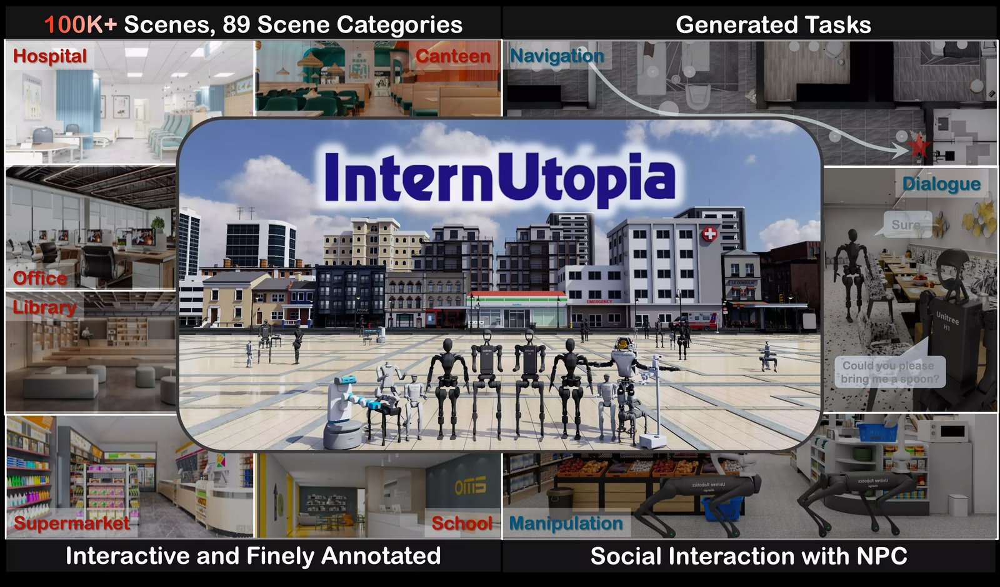
InternUtopia · README teaser (still image)
Listed11repositories
Stars8,285our sum · 19 Nov
To comeGR00T 2code: December
Hardwarecockpit and glove
OpenHomie626HOMIE cockpit codehardware files on request
TAG43glove CAD, circuit boards,firmware, control code
The person’s side. HOMIE’s cockpit code is public; the exoskeleton, glove and pedal files come on request. TAG’s tactile glove is open hardware: CAD, circuit boards, firmware and control code in one repository.
System 0. HOMIE’s repository points to a “homie v2” policy inside GR00T-WholeBodyControl: the Decoupled WBC. The same repository holds SONIC, with training code, C++ inference, three checkpoints and VR teleoperation.
Policies from pixels. VIRAL and DoorMan share one repository, one branch each: teacher training, student training, evaluation. Isaac-GR00T, the VLA above System 0, is context: it is not counted in any sum here.
One specialist per skill. Gallant’s voxel-grid locomotion and HoST’s stand-up controller for the humanoid, RoboDuet for a quadruped with an arm. Each ships its training code; RoboDuet also its deployment code.
Simulation and data. GRUtopia lives on as InternUtopia, six releases so far. GRAIL ships its pipeline, tracking checkpoints and a dataset downloaded 267,769 times. DiffTactile is a simulator package.
The eleven repositories above: 8,285 stars, our sum from GitHub on 19 November 2026, Isaac-GR00T left out. Not public yet: the code of the world-action model.
Stars: GitHub API, 19 Nov 2026 · downloads: Hugging Face API, same day · contents: the READMEs · “v2”: OpenHomie README · sums are ours · media: project pages, repository docs and READMEs
StartRootsMoveHandsSystem 0SeeSystem 1
90
Releases
Released, and coming
Public releases, in the order they came out. Amber is announced, not yet released.
SONIC · VR whole-body teleoperation, real G1
GRAIL · simulated G1s executing generated motions
GR00T 2 · page banner: a robot hand turns 1 into 2
SONICFeb 2026open-sourced
GRAILJun 2026code released
GR00T 2Decembercode, announced
Feb 2025
OpenHomieHOMIE: training and deployment code
Nov 2025
Decoupled WBCGR00T-WholeBodyControl opens, for GR00T N1.5 and N1.6
Feb 2026
SONICcheckpoints, C++ inference, VR teleoperation
Mar 2026
Gallanttraining code
Apr 2026
VisualSim2RealVIRAL and DoorMan: training code
Apr 2026
SONIC training codetrain from scratch, or fine-tune
GRAILcode · checkpoints in July · dataset on Hugging Face
Nov 2026
GR00T 2whitepaper and project page
December
GR00T 2 codethe page’s button: “Code — Available in December”
Controllers first. HOMIE’s code came out in February 2025, the month of its paper. Its second version, the Decoupled WBC, opened GR00T-WholeBodyControl that November; SONIC followed in February 2026 with checkpoints, C++ inference and VR teleoperation.
Then the training code. Gallant in March, SONIC and the repository of VIRAL and DoorMan in April. In May, SONIC and Isaac-GR00T meet in one workflow: collect data with SONIC, fine-tune GR00T N1.7, deploy on the G1.
Then the data. GRAIL’s pipeline in June, its tracking checkpoints in July. Its dataset on Hugging Face, extended twice in November 2026, holds over 35,000 physically validated motions.
Now the world-action model. The GR00T 2 whitepaper and its project page are dated November 2026. The code button on that page is not active yet; it reads “Available in December”.
More releases are on the way; this talk stops at what is public.
Dates: each repository’s README news; first commit for OpenHomie, Gallant and VisualSim2Real · GR00T 2: project page · the list is not to scale · clips: SONIC, GRAIL and GR00T 2 project pages
StartRootsMoveHandsSystem 0SeeSystem 1
91
Recap · Roots, Move, Hands
The stack as a relay
Each work’s limit is the next work’s title.
RootsBefore the humanoid: can a robot touch, walk and work?2023 – 2024
2024DiffTactileTouch you can simulate and differentiate
2024RoboDuetTwo policies make legs and arm one body
2024GRUtopiaA simulated city for agents on legged robots
MoveCan a humanoid’s legs go anywhere, and get back up?2025
2025HoSTStand up from many postures, no motion data
2025BeamDojoAim every footstep: stepping stones and beams
2025VB-ComA blind policy takes over when vision fails
HandsWho drives the upper body, and where do demonstrations come from?2025 – 2026
2025HOMIEA $500 cockpit: one person drives the humanoid
2026FORGEOne force-aware policy for legs and arms
2026TAGThe operator feels the robot’s fingertip contact
2026OPFAOne action latent for grippers and hands
The baton goes on to System 0, See and System 1.
Card years: first public version (arXiv) · venues and full citations: the reference slides
StartRootsMoveHandsSystem 0SeeSystem 1
92
Recap · System 0, See, System 1
The stack as a relay, continued
Each work’s limit is the next work’s title.
System 0Can one controller execute any whole-body motion, whoever writes the command?2025 – 2026
2025Decoupled WBCRL legs, IK arms, commanded by a VLA
2025SONICOne tracker for almost any motion, one token
SeeCan a policy write the commands from the robot’s own camera, trained only in simulation?2025 – 2026
2025VIRALPixels to actions, trained only in simulation
2025DoorManAn RGB policy opens doors it never saw
2026GRAILRobot data generated by a video world model
System 1Can one model write the commands for every task, on the robot’s own computer?2026
2026GR00T 2 TurboA world-action model onboard writes the tokens
The stackThe three roads meet on one Unitree G12026
S0SONICTurns each token into joint targets, at 50 Hz
DATASimulated replays250,000 episodes from real G1 motions
S1GR00T 2 TurboWrites 80 tokens about once per second
No person writes the commands in this stack. So what replaced the cockpit?
The stack: GR00T 2 whitepaper (NVIDIA, Nov. 2026), Fig. 9 and App. H · card years: first public version (arXiv, repository or whitepaper) · venues: the reference slides
StartRootsMoveHandsSystem 0SeeSystem 1
93
Takeaways
Three things building the stack taught us
01
The controller became an API
The command changed with each controller: a velocity, a goal point, joint angles. SONIC ends it with 64 numbers that any layer above can write.
RoboDuet Gallant HOMIE SONIC VIRAL · increments on HOMIE’s controller
02
The writer changed three times
First a person in a cockpit. Then policies trained in simulation, and a VLA. Today a world-action model on the robot writes the tokens.
HOMIE VIRAL · DoorMan · GRAIL GR00T N1.5 on SONIC GR00T 2 Turbo
03
Data stopped needing a person per episode
Hand-written rewards, then teleoperation. Then ≈ 700 h of motion capture, generated video, and 250,000 simulated replays of real motions.
HOMIE SONIC GRAIL GR00T 2 Turbo teleoperation still seeds the replays
No single model replaced the person in the cockpit: a stack did, one layer and one interface at a time.
64 numbers, ≈ 700 h: SONIC (Science Robotics 2026) · 35,000+ motions: GRAIL project page · 250,000 episodes: GR00T 2 whitepaper, App. H · the three diagrams are schematics
StartRootsMoveHandsSystem 0SeeSystem 1
94
Outlook
What is still open
Contact
Force, not only motion
The token from S1 to S0 carries motion. Contact force is not represented explicitly, and S1 takes no touch input. Tactile gloves and force estimates are a start.
Seed: TAG · blindfolded operator feels each press
Also: FORGE (wrist force, no sensor) · DiffTactile
Perception
Eyes inside System 0
SONIC is blind: it reads proprioception and the command. Terrain reaches it only through the layer above. A general tracker with its own eyes is still missing.
Seed: Gallant · a LiDAR policy ducks under a panel
Also: GRAIL · height map into SONIC, in simulation
Horizon
Long tasks, few mistakes
Spill clean-up, the hardest whole-body task, succeeds in 14 of 30 trials (46.7 %). S1 sees 0.8 s of history; longer plans are left to a slower reasoning layer.
Seed: GR00T 2 Turbo · trash to a cafeteria bin
Also: S2 · a reasoning model picks task and target
If the last four years asked “who writes the command?”, the next ask “what can each layer feel, see and remember?”
Clips: TAG, Gallant and GR00T 2 project pages, real robots (playback speeds not stated there) · limits: GR00T 2 whitepaper, pp. 26–28 and Table 25; SONIC, Science Robotics 2026
StartRootsMoveHandsSystem 0SeeSystem 1
95
References · Roots, Move, Hands
Works in this talk
Roots
DiffTactile: A Physics-based Differentiable Tactile Simulator for Contact-rich Robotic Manipulation.ICLR 2024
RoboDuet: Learning a Cooperative Policy for Whole-body Legged Loco-Manipulation.IEEE Robotics and Automation Letters 10(5), 2025
GRUtopia: Dream General Robots in a City at Scale.Technical report, arXiv:2407.10943, 2024
Move
Learning Humanoid Standing-up Control across Diverse Postures (HoST).RSS 2025 · Outstanding Systems Paper Award finalist
BeamDojo: Learning Agile Humanoid Locomotion on Sparse Footholds.RSS 2025
Move continued
VB-Com: Learning Vision-Blind Composite Humanoid Locomotion Against Deficient Perception.ICRA 2026
Gallant: Voxel Grid-based Humanoid Locomotion and Local-navigation across 3D Constrained Terrains.CVPR 2026 · Highlight
Hands
HOMIE: Humanoid Loco-Manipulation with Isomorphic Exoskeleton Cockpit.RSS 2025
FORGE: Force-Aware Multi-Granularity Control for Efficient Humanoid Loco-Manipulation.arXiv:2611.17142, 2026
Feel Robot Feels: Tactile Feedback Array Glove for Dexterous Manipulation (TAG).arXiv:2603.28542, 2026 · in submission
One-Policy-Fits-All: Geometry-Aware Action Latents for Cross-Embodiment Manipulation (OPFA).ICRA 2026
HoST: RSS lists the award as “Outstanding Systems Paper Award” finalist.
StartRootsMoveHandsSystem 0SeeSystem 1
96
References · System 0, See, System 1
Works in this talk, continued
System 0
GR00T-WholeBodyControl: the Decoupled WBC and SONIC controllers.github.com/NVlabs/GR00T-WholeBodyControl · open source since Nov. 2025
VIRAL: Visual Sim-to-Real at Scale for Humanoid Loco-Manipulation.CVPR 2026
See continued
Opening the Sim-to-Real Door for Humanoid Pixel-to-Action Policy Transfer (DoorMan).CVPR 2026
GRAIL: Generating Humanoid Loco-Manipulation from World Models.CoRL 2026 oral · Best Paper Award Finalist
System 1
Isaac-GR00T: the GR00T N1 to N1.7 vision-language-action models.github.com/NVIDIA/Isaac-GR00T · open source since Mar. 2025
GR00T 2: Scaling Robot Foundation Models for Generalization, Dexterity, and Adaptation.NVIDIA whitepaper, November 2026
Also co-authored:SMAP: Self-supervised Motion Adaptation for Physically Plausible Humanoid Whole-body Control. arXiv:2505.19463, 2025 TeleOpBench: A Simulator-Centric Benchmark for Dual-Arm Dexterous Teleoperation. arXiv:2505.12748, 2025
Also named on the slides, as baselines, predecessors or components of the works above: Deep Whole-Body Control · GAMMA · GeFF · Walk These Ways · PIM · OpenTelevision · AnyTeleop · Telekinesis · Mobile-TeleVision · HumanPlus · OmniH2O · Seer · TWIST2 · Manus glove · BeyondMimic · Any2Track · DAViD · HOIDiff · CHOIS · ResMimic · HDMI · π0.5 · Diffusion Policy (DP). The layer names System 2 / 1 / 0 follow the GR00T 2 whitepaper. All clips and figures come from the authors’ public pages, videos and papers.
StartRootsMoveHandsSystem 0SeeSystem 1
97
Thank you
From a robot dog with an arm to one stack for the whole body. Questions?